Java学习笔记——By Bug
前言
参考资料： 【Java入门基础视频教程，java零基础自学就选黑马程序员Java入门教程（含Java项目和Java真题）】 https://www.bilibili.com/video/BV1Cv411372m/?share_source=copy_web&vd_source=ea0cf64e8dac6f0193a7e28187a0fccb
Java下载：Java Downloads | Oracle
说明： 本笔记为本人学习过程中随手写的笔记，为复习使用，笔记中可能存在遗漏或错误，具体请以官方文档和权威书籍为准！谢谢！ 笔记中的一些图片等元素因路径配置问题，可能会发生丢失。 笔记中展示的构造器和方法等的知识点仅为部分内容，完整内容请查阅官方开发文档内容！
👇JavaSE👇
Java介绍
简介
什么是 Java 技术，为什么需要它？
Java 是 Sun Microsystems 于 1995 年首次发布的一种编程语言和计算平台。它已经从不起眼的开始发展到为当今数字世界的很大一部分提供动力，通过提供可靠的平台来构建许多服务和应用程序。为未来设计的创新产品和数字服务也继续依赖于 Java。
虽然大多数现代 Java 应用程序将 Java 运行时和应用程序结合在一起，但仍有许多应用程序甚至某些网站无法运行，除非您安装了桌面 Java。Java.com，这个网站，是为那些可能仍然需要 Java 的桌面应用程序（特别是面向 Java 8 的应用程序）的消费者准备的。
搭建开发环境
Java产品叫JDK（Java开发者工具包），必须安装JDK才能使用Java
下载：Java Downloads | Oracle 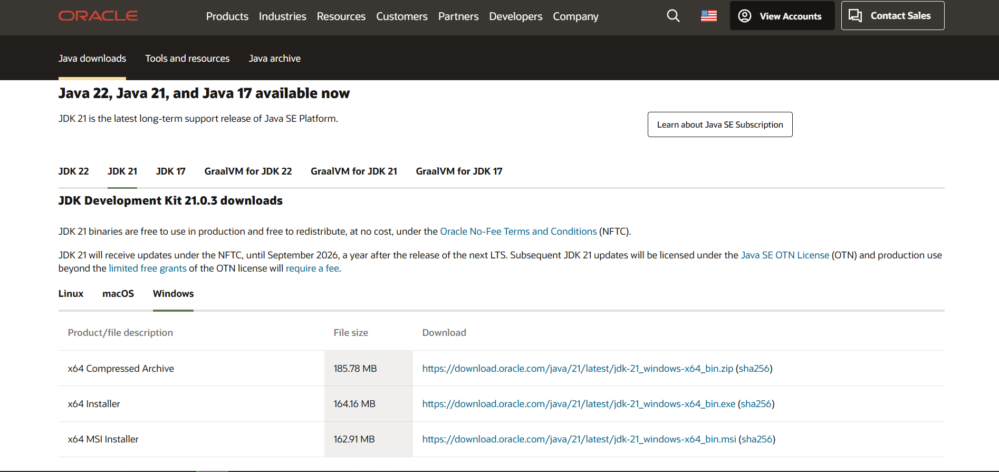
安装：运行安装包程序，安装软件 注意：安装目录尽量避免包含中文和空格 验证Java程序是否安装完成方法：
xxxxxxxxxx#控制台命令javajavacjava -versionjavac -version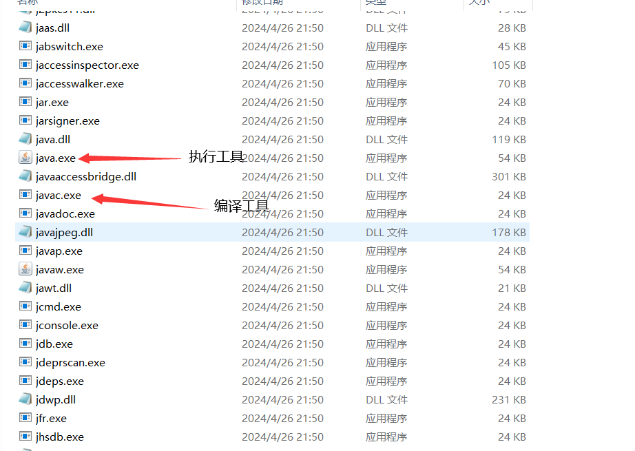
第一个Java程序
Java程序开发步骤：编写代码——编译代码——运行代码
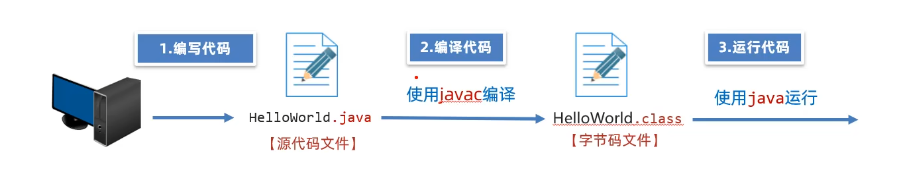
用记事本创建一个helloworld.java文件（文件名建议使用英文）
编写java代码
xxxxxxxxxxpublic class helloword{public static void main(String[] args){System.out.println("helloworld");}}文件名要于类名一致
编译代码
打开命令行窗口，运行javac helloworld.java
会生成一个helloworld.class后缀的文件 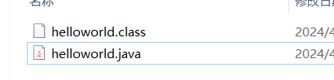
运行代码 命令行窗口运行：java helloworld 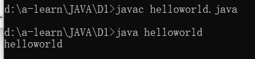
JDK组成和跨平台原理
JDK组成
JVM（java virtual machine）：Java虚拟机，真正运行Java的地方
核心类库：Java写好的程序，程序员进行调用
JRE：Java的运行环境
开发工具包：Java，Javac等...
跨平台原来
一次编译，处处可用
IntelliJ IDEA开发工具
概述 IntelliJ IDEA（简称 IDEA）是一款由 JetBrains 公司开发的强大且广受欢迎的集成开发环境（IDE），主要用于Java开发，但也支持其他编程语言和技术栈的开发。作为一款功能丰富、高效的IDE，IntelliJ IDEA 在软件开发领域中广泛用于开发各种类型的应用程序，从桌面应用到Web应用、移动应用、大数据和云计算应用等等。
下载地址：Download IntelliJ IDEA – The Leading Java and Kotlin IDE (jetbrains.com) 下载社区版即可 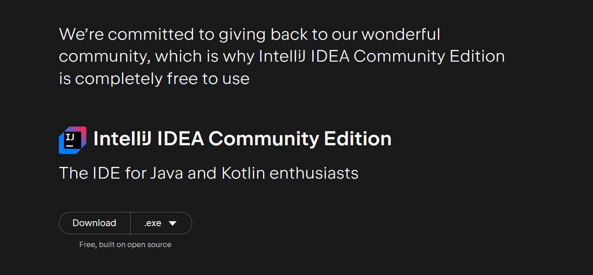
安装 运行idea安装程序
汉化（非必须） 在插件中找到chinese汉化包，安装后冲的idea即可
新建项目
建议使用空项目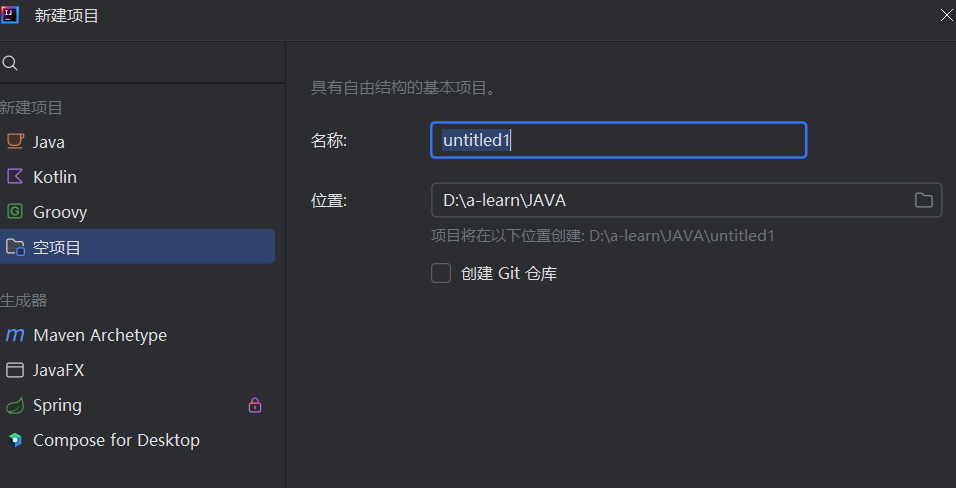
小技巧：快速创建main函数方法
输入main，回车
输入psvm，回车
示例代码
xxxxxxxxxxpackage com.huang.hello;
public class sayhello {
public static void main(String[] args) { System.out.println("hello world"); } }
IDEA配置
快捷键
| 快捷键 | 功能 |
|---|---|
| main/psvm/sout | 快速输入相关代码 |
| ctrl+d | 复制当前行代码到下一行 |
| ctrl+y | 删除所在行 |
| ctrl+L | 格式化代码 |
| alt+shift+↑/↓ | 上下移动代码 |
| ctrl+/ ctrl+shift+/ | 注释代码 |
入门内容
注释
xxxxxxxxxx//单行注释,双斜杠/*多行注释多行注释多行注释*/
/*文档注释，可以提取到说明书中**/| 快捷键 | 作用 |
|---|---|
| ctrl+/ | 单行注释 |
| ctrl+shift+/ | 多行注释 |
字面量
在Java中，字面量（literal）指人类可以阅读的固定值的表示。例如，数100是字面量。字面量也常常称为常量（constant）
Java的字面量可以是任意基本数据类型。每种字面量的表示取决于类型。如前所述，字符常量由单引号包括。例如，'a'和'%'都是字符常量。
| 类型 | 字面量 | 备注 |
|---|---|---|
| 整数 | 199，-199 | |
| 小数 | -5.1，5.1 | |
| 字符 | 'a' | ''(单引号)，有且只有一个字符 |
| 字符串 | "aaaaaa" | ""(双引号),可以有一个字符，也可以多个字符，也可以不写 |
| 空 | null | |
| 布尔值 | true,false |
变量
变量定义格式： 数据类型 变量名称=数据;
xxxxxxxxxx//变量定义、使用及重新赋值 public static void main(String[] args) { int a = 123; System.out.println(a); a+=2; System.out.println(a); }注意：
变量要先声明再使用
变量是什么类型，对应的数据就要是什么类型，否则会报错
定义多个变量，变量名不能相同
（局部）变量再当前作用域{}内有效，超出后无效
变量在声明时可以不赋值，但在使用时必须要复制，否则将会报错
关键字与标识符
关键字 Java 中的关键字是指具有特定含义的单词或符号，这些关键字在 Java 编程中有着重要的作用。Java 关键字分为基本关键字、访问修饰符、类和接口关键字等。
标识符
Java 中的标识符是指用于命名变量、常量、方法、类、接口等的名称。Java 的标识符需要符合一定的规则，具体如下：
标识符可以包含字母、数字、下划线、美元符号等字符，但不能以数字开头，必能使用关键字；
标识符必须以字母、下划线或美元符号开头；
标识符不能使用 Java 中的关键字；
Java 中常用的标识符包括变量名、常量名、方法名、类名、接口名等。
===面向对象基础篇===
数据类型
基本数据类型
| 类型 | 关键字 | 内存占用 | 数据范围 |
|---|---|---|---|
| 整型 | byte | 1 | -128-127 |
| short | 2 | -32768-32767 | |
| int（default） | 4 | -2147483648-2147483647（10位） | |
| long | 8 | -2^63 ~ 2^63 - 1 （19位） | |
| 浮点型 | float | 4 | 1.401298E-45---3.402825E+38 |
| double（default） | 8 | 4.9000000E-45---1.797693E+308 | |
| 布尔型 | boolean | 1 | true，false |
| 字符型 | char | 2 | 0-65535 |
xxxxxxxxxx int a = 123456;//数字类型默认为int，如果使用long类型，需要在最后加上L或llong a2 = 1234567890098765;//报错long a3 = 1234567890098765L;//小数默认为double,使用float要在小数后面加Ffloat f=3.1415111F;double d=3.1415111111111;引用数据类型
String——字符串数据类型
数据类型转换
自动类型转换
类型范围小的变量可以直接赋值给范围大的变量
xxxxxxxxxxbyte a=1;System.out.println(getType(a));//byteint b = a;System.out.println(getType(b));//int自动类型转换方向（从小到大） byte →short→int→long→float→double char→int
表达式的自动类型转换
xxxxxxxxxxbyte a=1;short b =2;int c = 3;int d = a +b+c ;//结果为int
表达式的最终结果类型表达式中最高类型决定
byte，short，char会转换成int类型参与运算
强制类型转换
大范围的变量赋值给小范围的时，需要强制类型转换
xxxxxxxxxx//强制类型转换：数据类型 变量名 = (数据类型)数据int a = 1;//将a转换成byte类型byte b = (byte)a;注意：
强制类型转换可能会造成数据丢失
小数，浮点数转换成整数时，会舍弃小数部分，仅保留整数部分
运算符
算数运算符
| 符号 | 作用 |
|---|---|
| + | 加 |
| - | 减 |
| * | 乘 |
| / | 除（两个整数相除只保留整数） |
| % | 取余 |
可以使用 + 做连接符
自增自减运算符
| 符号 | 作用 |
|---|---|
| ++ | 自增，对自身变量+1 |
| -- | 自减，对自身变量-1 |
赋值运算符
| 符号 | 作用 |
|---|---|
| = | 赋值 |
| += | 加后赋值 |
| -= | 减后赋值 |
| *= | 乘后赋值 |
| /= | 除后赋值 |
| %= | 取余后赋值 |
关系运算符
| 符号 | 作用 |
|---|---|
| > | 大于 |
| >= | 大于等于 |
| < | 小于 |
| <= | 小于等于 |
| == | 等于 |
| != | 不等 |
逻辑运算符
| 符号 | 作用 |
|---|---|
| & | 逻辑与 |
| | | 逻辑或 |
| ! | 逻辑非 |
| ^ | 逻辑异或 |
| 符号 | 作用 |
|---|---|
| && | 左边为false右边不执行 |
| || | 左边为true右边不执行 |
三元运算符
格式：表达式?值1:值2;
表达式为true时，返回值1，false时,返回值2
xxxxxxxxxxint mat = 99;String b = mat - 60 >= 60 ? "及格" : "不及格";System.out.println(b);String c = mat >= 60 ? "及格" : "不及格";System.out.println(c);
运算符优先级
| 优先级 | 类型 | 符号 |
|---|---|---|
| 1 | 括号 | ()、[ ]、. |
| 2 | 非、正，负号 | !、+(正)、-(负) |
| 3 | 自增，自减 | ++、-- |
| 4 | 乘，除，取余 | *、/、% |
| 5 | 加，减 | +、- |
| 6 | 移位运算 | <<、>>、>>> |
| 7 | 大小关系 | <、<=、>、>= |
| 8 | 相等关系 | ==、!= |
| 9 | 按位与 | & |
| 10 | 按位异或（在java中，这不是幂次方的符号） | ^ |
| 11 | 按位或 | | |
| 12 | 逻辑与(短路与) | && |
| 13 | 逻辑或(短路或) | || |
| 14 | 条件运算(三目运算) | ? : |
| 15 | 赋值运算 | =、+=、-=、*=、/=、%= |
| 16 | 位赋值运算 | &=、|=、^=、~=、<<=、>>=、>>>= |
JavaAPI
API文档下载（以java21为例）：Java Development Kit 21 Documentation (oracle.com)
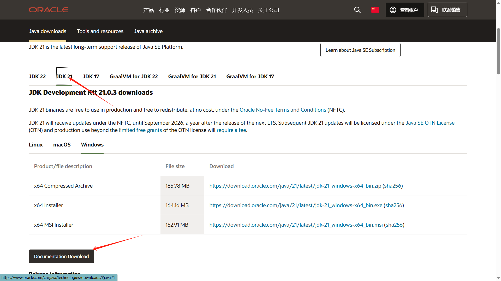
API使用：
导入包
使用包中的程序
例如使用scanner
xxxxxxxxxx//导入包import java.util.Scanner;public static void main(String[] args) {//使用 Scanner SC = new Scanner(System.in); int j = SC.nextInt(); System.out.println(j);}
流程控制
分支结构
if
if分支结构的三种形式
形式1
xxxxxxxxxxif(表达式){//code}形式2
xxxxxxxxxxif(表达式){//code}else{//code}形式3
xxxxxxxxxxif(表达式){//code}else if(表达式){//code}else{//code}
switch
语法：
xxxxxxxxxxswitch(表达式){case 值1://codebreak;case 值2://codebreak;default://code}注意：
case的值只能是字面量，不能为变量，case的值不能重复
语句结束后要使用break，否则会出现穿透现象
switch表达式类型只能是byte，short，int，char，enum，string不支持double,float,long
循环结构
for循环
xxxxxxxxxxfor (int i =0;i<5;i++){ System.out.println(1);}案例
xxxxxxxxxx//小鸡2元一只，公鸡3元一只，母鸡4元一只 用n元买每种鸡各多少只 System.out.println("请输入金额"); Scanner sc = new Scanner(System.in); int a = sc.nextInt(); for (int i = 0; i <= a / 4; i++) { for (int j = 0; j <= a / 3; j++) { for (int k = 0; k <= a / 2; k++) { if(i*4+j*3+k*4==a){ System.out.println("小鸡：" + k + "只, 公鸡：" + j + "只, 母鸡：" + i + "只"); } } } }
while循环
xxxxxxxxxx//while循环语法while(条件){ //code}//示例int i =0;while (i<5){ System.out.println(i++);}
do-while循环
xxxxxxxxxx//do-while循环语法do{ //code}while(条件);
//示例int i =0;do{ System.out.println(i++);}while (i<5);
//无论是否满足条件，都会打印一次int i =0;do{ System.out.println(i++);}while (i<0);//输出0循环注意事项
while循环和do-while循环的区别：
while循环是先判断条件是否成立，再执行程序语句
do-while是先执行语句，再判断条件是否成立
死循环写法
xxxxxxxxxx//写法1for(;;){
}//写法2while(true){
}//写法3do{
}while(true);//其他方法亦可
示例
xxxxxxxxxx //珠穆朗玛峰高度8848860mm，一张纸0.1mm求折叠多少次，能大于等于珠峰高度double height = 8848860;double paper = 0.1;int i=0;while (true){ paper*=2; i++; if (paper>=height){ System.out.println("当前高度:"+paper+"，条件满足"+"折叠了"+i+'次'); break; }}
跳转关键字
break---终止当前循环 只能用于所在循环，或结束所在switch分支的执行
continue---跳过本次循环 只能用于循环中
案例：生成随机数
xxxxxxxxxx //生成随机数，猜数字游戏 Random r = new Random(); int k = r.nextInt(10); int i; Scanner s = new Scanner(System.in); while (true) { System.out.println("请输入你猜的数字"); i = s.nextInt(); if (i == k) { System.out.println("对了"); break; } else if(i > k) { System.out.println("大了，请重试"); } else if(i < k) { System.out.println("小了，请重试"); } }
数组
数组是一个容器，用来存储一批同类型的数据
静态数组初始化
初始化
xxxxxxxxxx//完整格式数据类型[] 数组名=new 数据类型[]{数值1，数值2，....}int[] a=new int[]{1, 2, 3, 4, 5, 6, 7, 8, 9};//简化格式数据类型[] 数组名={数值1，数值2，....}int[] a= {1, 2, 3, 4, 5, 6, 7, 8, 9};
//注意事项//数据类型[] 数组名 亦可写为数据类型 数组名[]//存放的数据类型要和数据定义类型相同
静态数组访问
语法：数字名[索引号]
xxxxxxxxxxint[] a= {22, 21, 33, 44, 55, 66, 77, 88, 99}; System.out.println(a[0]);//22 System.out.println(a[1]);//21 System.out.println(a[2]);//33 System.out.println(a[3]);//44//修改数组数据a[4]=100;数组的最大索引长度：数组长度-1
数组遍历
xxxxxxxxxxint[] a= {22, 21, 33, 44, 55, 66, 77, 88, 99}; for (int i = 0; i < a.length; i++) { System.out.println(a[i]); }//方法不唯一
动态初始化数组
数组的动态初始化——再定义数组时先不存入具体的元素值，只确定数组存储的数据类型和长度
动态初始化格式：
xxxxxxxxxx//数据类型[] 数组名=new 数据类型[长度];int[] a=new int[5];
案例：计算评分
xxxxxxxxxxint[] fen = new int[5];Scanner A = new Scanner(System.in);for (int i = 0; i < fen.length; i++) { fen[i] = A.nextInt();}int sum = 0;for (int i = 0; i < fen.length; i++) { sum += fen[i];}System.out.println(sum / fen.length);案例：随机排名
xxxxxxxxxx//有五个人，随机对五个人进行排序int[] a = {1, 2, 3, 4, 5};Random r = new Random();int c= 0;for (int i = 0; i < a.length; i++) { int b=r.nextInt(1,6); c =a[i]; a[i]=a[b]; a[b]=c;}for (int i = 0; i < a.length; i++) {System.out.println(a[i]);}
方法
方法是一种语法结构，它可以把一段代码封装成一个功能
方法定义
语法：
xxxxxxxxxx修饰符 返回值类型 方法名(){方法体代码return 返回值;}
方法定义时要注意： 1.方法是否需要接收处理数据 2.方法是否需要返回数据
xxxxxxxxxxpublic static int sum(int a, int b) { return a + b; }
public static void main(String[] args) { System.out.println(sum(1, 2));//3 System.out.println(sum(10, 20));//30 }注意事项
如果方法不需要返回数据，返回值类型必须申明成void（无返回值申明），此时方法内部不可以使用return返回数据。
方法如果不需要接收数据，则不需要定义形参，且调用方法时也不可以传数据给方法了。
没有参数，且没有返回值类型（void）申明的方法，称为无参数、无返回值的方法，依次类推。
方法使用的常见问题
方法在类中的位置前后无所谓，但一个方法不能定义在另一个方法里
return语句以下不能编写语句，return以下的语句不会执行
方法不调用不会执行
返回值类型为void时，方法内不能使用return
调用无返回值的方法，只有一种方法：直接调用
调用有返回值的方法有三种：
可以定义变量接受结果
直接输出调用
直接调用
参数传递机制
java参数传递机制：值传递 指的是在传输实参给方法的形参时，传输的时实参变量中储存的值的副本
xxxxxxxxxx public static void change(int[] a){ System.out.println("c1"+a[1]); a[1]=20; System.out.println("c2"+a[1]); }
public static void main(String[] args) { int[] a=new int[]{1,2,3,4}; change(a); System.out.println("ma"+a[1]);
}
案例：打印int数组内容
xxxxxxxxxx public static void change(int[] a){ System.out.print("["); for (int i = 0; i < a.length; i++) { if (i== a.length-1){ System.out.print(a[i]); } else { System.out.print(a[i]+","); } } System.out.print("]"); }
public static void main(String[] args) { int[] a=new int[]{1,2,3,4}; change(a); } //输出：[1,2,3,4]
方法重载
在一个类中，出现多个重名方法，但是，它们的形参列表是不同的，那么这些方法就称为方法重载
xxxxxxxxxxpublic static int sum(int[] a) { int sum = 0; for (int i = 0; i < a.length; i++) { sum += a[i]; } return sum; }
public static int sum(int a, int b) { return a + b; } public static int sum(int a){ return a+6; }
public static void main(String[] args) { int[] a = new int[]{1, 2, 3, 4};
System.out.println(sum(a)); System.out.println(sum(1, 2)); System.out.println(sum(1)); }
return关键字
return关键字可以用于无返回值的方法中 作用：立即跳出并结束当前方法
案例篇
买飞机票
需求 用户购买机票时，机票原价会按淡季，旺季，头等舱还是经济舱的情况进行相应的优惠方案，优惠方案如下：5-10月为旺季，头等舱9折，经济舱8.5折；11月-次年4月为淡季，头等舱7折，经济舱6.5折，请开发程序计算出用户当前机票的优惠价格
xxxxxxxxxxpublic class buyplanepack { public static void main(String[] args) { int yuanjia; int month; String leave; Scanner a = new Scanner(System.in); System.out.println("请输入原价："); yuanjia = a.nextInt(); System.out.println("请输入月份："); month = a.nextInt(); System.out.println("请输入舱席："); leave = a.next();
double last = airfare(yuanjia, month, leave); if (last>=0){ System.out.println("优惠后机票价格：" + last + "元"); } else if (last==-1) { System.out.println("你输入的月份不合法");
} else if(last==-2){ System.out.println("你输入的舱位不合法"); }
a.close(); }
public static double airfare(int yuanjia, int month, String leave) { System.out.println(); if (month >= 5 && month <= 10) { return switch (leave) { case "头等舱" -> yuanjia * 0.9; case "经济舱" -> yuanjia * 0.85; default -> -2; };
} else if ((month >= 1 && month < 5) || (month > 10 && month <= 12)) { return switch (leave) { case "头等舱" -> yuanjia * 0.7; case "经济舱" -> yuanjia * 0.65; default -> -2; };
} else { return -1; }
}
}
验证码
需求 开发一个程序，可以生成指定位数的验证码，每位都可以输数字或大小写字母
xxxxxxxxxxpublic class yanzhengma { public static void main(String[] args) { String A = yanzheng(7);//传入验证码的位数 System.out.println(A); }
public static String yanzheng(int a) { String b = ""; Random c = new Random(); int d; for (int i = 0; i < a; ) { d = c.nextInt(48,123); if ((d >= 48 && d <= 57) || (d >= 65 && d <= 90) || (d >= 97 && d <= 122)) { b += (char) d; i++; } } return b; }}
评委打分
需求 在一个比赛中，有多名评委对选手进行打分，分数在0-100之间的整数，去掉打分中的最高分和最低分，对剩下的分数求平均，作为选手的最终得分
xxxxxxxxxxpackage com.huang.anli;
import java.util.ArrayList;
import java.util.Scanner;
public class dafen { public static void main(String[] args) { ArrayList <Integer> a = new ArrayList<>(); int in; System.out.println("请输入评委打分，输入-1结束"); Scanner b = new Scanner(System.in); while (true) { in=b.nextInt(); if (in!=-1){ a.add(in); } else { break; } } double k = dafen(a); System.out.println(k); } public static double dafen(ArrayList<Integer> a) { int max=a.getFirst(); int min=a.getFirst(); for (int c :a){ if(c>max){ max=c; } if(c<min){ min=c; } } a.remove(Integer.valueOf(max)); a.remove(Integer.valueOf(min));int sum=0;for (int c :a){ sum+=c;} return (double) sum /a.size();
}}
数字加密
需求 某个系统的密码是一个四位数，如：1987，为了安全，需要对密码进行加密后在进行传输，加密规则：对密码中的每位数都加5，再对10求余数，得到一串加密后的新数
xxxxxxxxxxpublic class jiami { //主函数 public static void main(String[] args) { String e=jia(12345); System.out.println(e); } //加密方法 public static String jia(int a) { //调用拆分方法 int[] c =chai(a); //将拆分的数据进行加密 for (int i = 0; i < c.length; i++) { c[i]=(c[i]+5)%10; } //将加密的数据反转后返回 return zhuan(c); } //反转方法 public static String zhuan(int[] c){ int b =0; for (int i = 0; i < c.length/2; i++) { b=c[i]; c[i]=c[c.length-i-1]; c[c.length-i-1]=b; } StringBuilder j = new StringBuilder(); for (int i = 0; i < c.length; i++) { j.append(c[i]); } return j.toString(); } //拆分方法 public static int[] chai(int a) { String s = Integer.toString(a); int[]b = new int[s.length()];
for (int i = 0; i < s.length(); i++) { b[i] = Character.getNumericValue(s.charAt(i)); } return b; }}
数组拷贝
需求 现有一个数组a，拷贝一份一模一样的数组b
xxxxxxxxxxpublic class copyint {public static void main(String[] args) {int[] a = {1, 4, 7, 9};int[] b = cp(a);int[] c=a;for (int i = 0; i < b.length; i++) {System.out.print(b[i]);}System.out.println();System.out.println(a);//a,b两个数组的内存地址不同System.out.println(b);System.out.println(c);//c和a的地址相同}private static int[] cp(int[] a) {int[] b = new int[a.length];for (int i = 0; i < a.length; i++) {b[i] = a[i];}return b;}}
抢红包
需求 在一个活动中，有五个红包，金额为：9，199，520，666，999请模拟抽奖，每个红包只能抽一次，顺序随机
xxxxxxxxxximport java.util.Random;
public class hongbao { public static void main(String[] args) { int[]bao ={9,199,520,666,999}; chou(bao);
} public static void chou(int[] a){ Random R = new Random();
for (int i = 0; ; ) { int c =R.nextInt(a.length); if (a[c]!=0){ System.out.println("恭喜你，中奖了，金额："+a[c]); a[c]=0; i++; } if (i==5)break; }
}}
找素数
需求 输入开始和结束的两个数，判断之间有多少素数
xxxxxxxxxxpublic class findsushu { public static void main(String[] args) { find(101, 200); }
public static void find(int start, int end) { int ge = 0;
for (int i = start; i <= end; i++) { boolean su = true; for (int j = 2; j < i / 2; j++) { if (i%j==0){ su=false; break; }
} if (su){ System.out.println(i); ge++;
} } System.out.println("素数个数" + ge); }}
打印乘法表
需求 打印99乘法表
xxxxxxxxxxpublic class chengfa99 { public static void main(String[] args) { for (int i = 1; i < 10; i++) { for (int j = 1; j <= i; j++) {
System.out.print(j+"x"+i+"="+i*j+'\t'); } System.out.println(); } }}
面向对象
入门示例
xxxxxxxxxx//student类文件package opp;
public class Student { String name; double chinese; double math; double english; public void sum(){ System.out.println(name+"的总成绩："+(chinese+math+english)); } public void avg(){ System.out.println(name+"的平均成绩："+(chinese+math+english)/3.0); }}
xxxxxxxxxx//text类文件package opp;
public class text { public static void main(String[] args) { Student s1 = new Student(); s1.name="张三"; s1.chinese=98; s1.math=88; s1.english=76; s1.sum(); s1.avg(); }}

注意事项
类名建议首字母大写，使用驼峰命名法。
类中定义的变量也成为成员变量（对象的属性），类中定义的方法也成为成员方法（对象的行为）。
成员对象本身存在默认值，在定义时一般情况下不对其进行赋值。
一个代码文件中，可以有多个class，但只能有一个用public修饰，且public修饰的类名必须和文件名相同。
对象和对象之间的数据不会相互影响，但多个变量指向同一个对象就会相互影响
如果某个对象没有一个变量引用它，则该对象就无法被操作，该对象被称为垃圾对象
this关键字
this是什么？ this是一个变量，可以在方法中使用，来拿到当前对象
应用场景 this主要用来解决变量名称冲突问题
this可以获取当前对象的地址
xxxxxxxxxxpackage opp;//定义对象public class trythis { //接收一个变量 double sc; public void print(double sc){ //在此两个sc，变量名冲突 if (this.sc==sc){ System.out.println("相等"); } else { System.out.println("不相等");
} }}
//改进对象，避免变量名冲突问题package opp;
public class trythis { //接收一个变量 double sc; public void print(double sc){ //在此两个sc，变量名冲突 //this.sc代表trythis的sc,sc代表方法的形参，这样可以避免变量名冲突问题 if (this.sc==sc){ System.out.println("相等"); } else { System.out.println("不相等");
} }}
package opp;
public class text { public static void main(String[] args) { //实例化对象trythis a = new trythis();a.sc=100;a.print(100);
}}
构造器
构造器是一种特殊的方法，构造器名字要和class类的类名相同，且不能声明返回值类型
若不写构造器，Java会默认生成一个无参数构造器 一旦定义了有参构造器，Java就不会再默认提供无参数构造器
xxxxxxxxxx//a1类文件package com.learn.a1;
public class a1 { public a1(){ System.out.println("触发了无参数构造器"); } public a1(int a){ System.out.println("触发了1个参数构造器"); } public a1(int a,int b){ System.out.println("触发了2个参数构造器"); }}
//a2类文件package com.learn.a1;
public class a2 { public static void main(String[] args) { a1 s1 = new a1(); a1 s2 = new a1(1); a1 s3 = new a1(1,2); }}
//输出结果/*触发了无参数构造器触发了1个参数构造器触发了2个参数构造器*/
封装
什么是封装？ 封装就是用类设计对象处理某一个事物的数据时，应该把要处理的数据以及处理的方法设计到一个对象中去
封装的设计规范 合理隐藏，合理暴露
控制对象的公开和隐藏
公开成员：使用public修饰
隐藏成员：使用private修饰
实体JavaBean
实体类：一种特殊形式的类
这个类中的成员变量都要是私有的，并且要对外提供get，set方法
这个类中必须有一个公共无参的构造器
xxxxxxxxxxpackage com.learn.a1;
public class a1 { private string name; private int age;
public string getName() { return name; }
public void setName(string name) { this.name = name; }
public int getAge() { return age; }
public void setAge(int age) { this.age = age; }
public a1(){ System.out.println("触发了无参数构造器"); }}应用场景
实体类只负责数据的存取，而对数据的处理由其他类来完成，实现数据和数据业务处理分离
xxxxxxxxxx//数据存取类package com.learn.a1;
public class a1 { private String name; private int age;
public String getName() { return name; }
public void setName(String name) { this.name = name; }
public int getAge() { return age; }
public void setAge(int age) { this.age = age; }
public a1(String a,int b){ this.name=a; this.age=b; }}
//数据操纵类package com.learn.a1;
public class A1gop { private a1 data; public A1gop(){
} public A1gop(a1 a){ this.data=a; } public void yesno(){ if(data.getAge()<18){ System.out.println("未成年"); } else if(data.getAge()>=18){ System.out.println("成年"); } }
}
//使用
package com.learn.a1;
public class a2 { public static void main(String[] args) { a1 s3 = new a1("张三",2); A1gop s = new A1gop(s3); s.yesno(); }}
综合案例——模仿电影信息系统
展示系统电影（电影名称，价格）
用户可以根据id查询详细信息
xxxxxxxxxx//数据存取类package com.learn.a1.move;
public class data { private int id; private String name; private String dates; private double srart; private String people;
public data() { }
public data(int id, String name, String dates, double srart, String people) { this.id = id; this.name = name; this.dates = dates; this.srart = srart; this.people = people; }
public int getId() { return id; }
public void setId(int id) { this.id = id; }
public String getName() { return name; }
public void setName(String name) { this.name = name; }
public String getDates() { return dates; }
public void setDates(String dates) { this.dates = dates; }
public double getSrart() { return srart; }
public void setSrart(int srart) { this.srart = srart; }
public String getPeople() { return people; }
public void setPeople(String people) { this.people = people; }}
xxxxxxxxxx// 数据处理类package com.learn.a1.move;
public class chulidata { private data[] data;
public chulidata() { }
public chulidata(com.learn.a1.move.data[] data) { this.data = data; } public void printmoves(){ System.out.println("------系统全部电影------"); for (int i = 0; i < data.length; i++) { System.out.println(String.format("ID：%d\t名称：%s\t上映时间：%s\t评分：%.2f\t作者：%s", data[i].getId(),data[i].getName(),data[i].getDates(),data[i].getSrart(),data[i].getPeople())); } } public void findmv(int id){ System.out.println("------你要查找的电影------"); for (int i = 0; i < data.length; i++) { if (data[i].getId()==id){ System.out.println(String.format("ID：%d\t名称：%s\t上映时间：%s\t评分：%.2f\t作者：%s", data[i].getId(),data[i].getName(),data[i].getDates(),data[i].getSrart(),data[i].getPeople())); return; }
} System.out.println("未查到相关电影"); }}
xxxxxxxxxx//创建对象并使用package com.learn.a1.move;
public class mainfun { public static void main(String[] args) { data d1 = new data(1,"猫和老鼠","2021-7-1",4.8,"张三"); data d2 = new data(2,"西游记","2022-5-3",3.5,"里斯"); data d3 = new data(3,"三国演义","2023-7-5",4.5,"赵六"); data d4 = new data(4,"水浒传","2024-3-1",4.6,"王五"); chulidata a = new chulidata(new data[]{d1, d2, d3, d4}); a.printmoves(); a.findmv(2); a.findmv(11); }}/*------系统全部电影------ID：1 名称：猫和老鼠 上映时间：2021-7-1 评分：4.80 作者：张三ID：2 名称：西游记 上映时间：2022-5-3 评分：3.50 作者：里斯ID：3 名称：三国演义 上映时间：2023-7-5 评分：4.50 作者：赵六ID：4 名称：水浒传 上映时间：2024-3-1 评分：4.60 作者：王五------你要查找的电影------ID：2 名称：西游记 上映时间：2022-5-3 评分：3.50 作者：里斯------你要查找的电影------未查到相关电影*/
成员变量和局部变量
两种变量的区别
| 区别/类型 | 成员变量 | 局部变量 |
|---|---|---|
| 在类中位置不同 | 在类中，方法外 | 常见于方法中 |
| 初始值不同 | 有默认值，不需要初始化 | 没有默认值，使用前必须赋值 |
| 内存位置不同 | 存在于堆内存 | 存在于栈内存 |
| 作用域不同 | 整个对象 | 在所属的大括号中 |
| 生命周期不同 | 与对象一起产生或销毁 | 方法调用产生，方法结束销毁 |
总结
定义类的格式
xxxxxxxxxxpublic class classname{ //成员变量 //成员方法 //构造器 //代码块 //内部类}注意事项
类名首字母大写，有意义，使用驼峰命名法，不能使用关键字，合法的标识符
一个Java文件中可以定义多个类，但只能有一个是public修饰的，且public修饰的类必须和Java文件名相同
面向对象高级语法
JavaAPI
API：应用程序编程接口
JavaAPI文档：Java SE 文档 — API 和文档 | Oracle 中国
在自己程序中调用其他包的注意事项
在当前程序中，要调用自己包下的其他程序，可以直接调用（同一包下的类，可以相互调用）
在当前程序中，要调用其他包下的程序，必须在当前程序中导包，才可以访问。（导包：import 包名.类名）
在当前程序中，要调用Java提供的程序，也必须先导包，才可以使用。但Java.lang包下的程序是不需要导包的，可以直接使用
在当前程序中，要调用多个不同包下的程序，而这些程序名正好一样，默认只能导入一个程序，另一个程序必须带包名访问。
String
创建字符串的方式
Java程序中所有的字符串文字都是此类对象
xxxxxxxxxxstring name = "张三";string tex = "abcdefg";调用构造器初始化字符串对象 下面是常用的构造器
构造器 说明 public String() 创建一个空白的字符串对象，不含有任何内容 public String(String tex) 根据传入的字符串，来创建字符串对象 public String(char[] chars) 根据字符数组的内容，来创建字符串对象 public String(byte[] bytes) 根据字节数组的内容，来创建字符串对象 xxxxxxxxxxpublic class Main {public static void main(String[] args) {String a = "aaa";System.out.println(a);String b= new String();System.out.println(b);char[] c = {'你','h'};String d = new String(c);System.out.println(d);byte[] e = {98,99,100};String f = new String(e);System.out.println(f);}}/*输出aaa你hbcd*/
String常用方法
| 方法名 | 返回值 | 说明 |
|---|---|---|
| length() | int | 获取字符串的长度 |
| charAt(int index) | char | 获取某个索引位置处的字符返回 |
| toCharArray(): | char[] | 将当前字符串转换成字符数组返回 |
| equals(Object anObject) | boolean | 判断当前字符串与另一个字符串内容是否一样，返回true或false |
| equalsIgnoreCase(String anotherString) | boolean | 判断当前字符串与另一个字符串内容是否一样，返回true或false（忽略大小写） |
| substring(int beginIndex,int endIndex) | String | 根据开始和结束索引进行截取字符串（含开始不含结束），得到新的字符串 |
| substring(int beginIndex) | String | 从开始索引进行截取字符串至结尾，得到新的字符串 |
| replace (CharSequence target,CharSequence replacement) | String | 使用新值替换字符串中的旧值，得到新的字符串 |
| contains(CharSequence s) | boolean | 判断字符串中是否包含某个字符 |
| startWith(String prefix) | boolean | 判断字符串是否以某个字符串内容开头，返回true或false |
| split(String regex) | String[] | 把字符串按照某个字样进行分割，并返回字符串数组 |
xxxxxxxxxxpublic class Main { public static void main(String[] args) { String a = "你好世界,hello"; //获取字符串的长度 System.out.println(a.length());//10
//获取某个索引位置处的字符返回 System.out.println("-----------"); System.out.println(a.charAt(2));//世
//将当前字符串转换成字符数组返回 System.out.println("-----------"); char[] b =a.toCharArray(); for (int i = 0; i < b.length; i++) { System.out.println(b[i]); }/* 你 好 世 界 , h e l l o*/
//判断当前字符串与另一个字符串内容是否一样 System.out.println("-----------"); String s1 = new String("世界"); String s2 = new String("世界"); System.out.println(s1 == s2);//false System.out.println(s1.equals(s2));//true
//判断当前字符串与另一个字符串内容是否一样（忽略大小写） System.out.println("-----------"); String pw1 ="a3AeEE"; String pw2 ="A3aeee"; System.out.println(pw1 == pw2);//false System.out.println(pw1.equalsIgnoreCase(pw2));//true
//根据开始和结束索引进行截取字符串 System.out.println("-----------"); System.out.println(a.substring(1, 3));//好世
//从开始索引进行截取字符串至结尾 System.out.println("-----------"); System.out.println(a.substring(1));//好世界,hello
//使用新值替换字符串中的旧值 System.out.println("-----------"); String f = a.replace("世界","world");//你好world,hello System.out.println(f);
//判断字符串中是否包含某个字符 System.out.println("-----------"); System.out.println(a.contains("世界"));//true System.out.println(a.contains("hello1"));//false
//判断字符串是否以某个字符串内容开头 System.out.println("-----------"); System.out.println(a.startsWith("你好"));//true System.out.println(a.startsWith("123"));//false
//把字符串按照某个字样进行分割，并返回字符串数组 System.out.println("-----------"); String h = "张三，里斯，王五，赵六"; String[] g = h.split("，"); for (int i = 0; i < g.length; i++) { System.out.println(g[i]); } /* 张三 里斯 王五 赵六 */
}}
String注意事项
String对象的内容是不可改变的，被称为不可改变字符串对象。
只要是以 ”双引号“ 包裹的字符串对象，都会被存储到字符串常量池，且相同的字符串内容只会存储一份
通过new方式创建的字符串对象，每new一次都会产生一个新的对象放在堆内存中
String应用案例
用户登录
用户输入账号和密码登录，登陆成功后欢迎，停止程序，失败次数最多为3次，超出次数登录失败，程序停止
xxxxxxxxxx//账号密码存储类package com.learn.a1;
public class idpwd { private String id="javaee"; private String pwd = "abc123";
public String getId() { return id; }
public String getPwd() { return pwd; }}
xxxxxxxxxx//校验类package com.learn.a1;
public class check { private String user; private String password; public check(String user,String password){ this.user=user; this.password=password; } public boolean jiancha(){ idpwd a = new idpwd(); return user.equals(a.getId())&&password.equals(a.getPwd()); }}
xxxxxxxxxx//main类import com.learn.a1.check;
import java.util.Scanner;
public class Main { public static void main(String[] args) { Scanner a = new Scanner(System.in); int e = 0; while (true){ System.out.println(); System.out.println("======请登录======"); System.out.println("请输入账号："); String usr = a.nextLine(); System.out.println("请输入密码："); String pwd = a.nextLine(); check d = new check(usr,pwd); if (d.jiancha()){ System.out.println("恭喜你，登录成功！"); break; } else{ e+=1; if (e>=3){ System.out.println("登陆失败"); break; } System.out.println("你还有"+(3-e)+"次机会");
} } }}
随机验证码（String版）
xxxxxxxxxximport java.util.Random;import java.util.Scanner;
public class Main { public static void main(String[] args) { Scanner s = new Scanner(System.in); while (true){ System.out.println("------验证码生成器------"); System.out.println("请输入验证码的位数"); int e =s.nextInt(); if (e>0){ System.out.println(code(e)); } else { System.out.println("结束成功"); break; } } } public static String code(int n){ String bases = "!@#$%^&*()-=+_ABCDEFGHIJKLMNOPQRSTUVWXYZabcdefghijklmnopqrstuvwxyz0123456789"; Random r = new Random(); String a = new String(); a=""; for (int i = 0; i < n; i++) { int num= r.nextInt(76); a+=bases.charAt(num); } return a; }}
ArrayList
ArrayList是集合，集合是一种容器，类似于数组。 数组的长度是固定的，集合的大小是可变的。功能更加强大，适合做元素个数不确定，存在增删改查操作的场景
集合都是支持泛型的
ArrayList<E> 约束集合在编译阶段只能操作某种数据类型。<> 中填入操作的数据类型
集合和泛型都不支持基本数据类型，只支持引用数据类型。
定义集合应该尽量采用泛型
注意：如需操作int数据类型，应使用Integer
创建ArrayList对象
xxxxxxxxxxArrayList a = new ArrayList();//默认可以存储任何类型的数据//要约束集合中的数据，可以使用下面的定义方法//ArrayList<数据类型> a = new ArrayList<数据类型>();ArrayList<int> a = new ArrayList<int>();//简化（jdk1.7以上）ArrayList<int> a = new ArrayList<>();
ArrayList的操作
增加数据
删除数据
修改数据
查询数据
ArrayList构造器
| 构造器 | 描述 |
|---|---|
| ArrayList() | 构造一个初始容量为10的空列表（常用） |
| ArrayList(int intialcapacity) | 构造具有初始容量的空列表 |
| ArrayList(Collection<? extends E> c) | 按照集合的迭代器返回的顺序，构造一个包含指定元素的列表 |
ArrayList常用方法
| 方法名 | 返回值类型 | 说明 |
|---|---|---|
| add(E e) | boolean | 将指定的元素添加到集合的末尾 |
| add(int index,E element) | void | 在集合的指定（index）位置插入指定元素 |
| get(int index) | E | 返回指定索引处的元素 |
| size() | int | 返回集合中的元素个数 |
| remove(int index) | E | 删除指定索引处的元素，返回被删除的元素 |
| remove(Object 0) | boolean | 删除指定的元素，返回删除是否成功 |
| set(int index,E element) | E | 修改指定索引处的元素，返回被修改的元素 |
xxxxxxxxxximport java.util.ArrayList;import java.util.Arrays;import java.util.Random;import java.util.Scanner;
public class Main { public static void main(String[] args) { // 将指定的元素添加到集合的末尾 System.out.println("------------"); ArrayList a = new ArrayList(); a.add("123"); a.add("av"); a.add("vf"); a.add("啊啊"); System.out.println(a);//[123, av, vf, 啊啊]
// 在集合的指定（index）位置插入指定元素 System.out.println("------------"); a.add(0,"first");//无返回值
// 返回指定索引处的元素 System.out.println("------------"); System.out.println(a.get(2));//av
// 返回集合中的元素个数 System.out.println("------------"); System.out.println(a.size());//5
// 删除指定索引处的元素，返回被删除的元素 System.out.println("------------"); System.out.println(a.remove(0));//first
// 删除指定的元素，返回删除是否成功 System.out.println("------------"); System.out.println(a.remove("123"));//true System.out.println(a.remove("2222"));//false
// 修改指定索引处的元素，返回被修改的元素 System.out.println("------------"); System.out.println(a.set(1, "第2个修改成功"));//vf
System.out.println(a);//[av, 第2个修改成功, 啊啊] }}
ArrayList应用案例
购物车 需求：
使用ArrayList集合表示购物车，存储商品名
遍历集合中的数据，包含枸杞的删除
输出集合内容，检查是否删除成功
xxxxxxxxxx//方法一：每次删除一个元素，i要向前退一个,否则会有删不尽的bugimport java.util.ArrayList;
public class Main { public static void main(String[] args) { ArrayList<String> data = new ArrayList<>(); data.add("前端开发基础"); data.add("JAVA开发教程"); data.add("数据结构（JAVA）"); data.add("JS脚本开发指南"); System.out.println(data); for (int i = 0; i < data.size(); i++) { String a = data.get(i); if (a.contains("JAVA")){ data.remove(a); i--;//每次删除一个元素，i要向前退一个 } } System.out.println(data); }}
xxxxxxxxxx//方法二：倒序查找import java.util.ArrayList;
public class Main { public static void main(String[] args) { ArrayList<String> data = new ArrayList<>(); data.add("前端开发基础"); data.add("JAVA开发教程"); data.add("数据结构（JAVA）"); data.add("JS脚本开发指南"); System.out.println(data); for (int i = data.size()-1; i >=0 ; i--) { String a = data.get(i); if (a.contains("JAVA")){ data.remove(a); } } System.out.println(data); }}
模拟外卖系统 需求：
完成菜品信息上架，以及菜品信息浏览
方法一：集合嵌套
xxxxxxxxxx//数据存储类//使用集合存储数据package com.learn.a1;import java.util.ArrayList;
public class datas { private ArrayList<ArrayList> datas=new ArrayList<>();
public ArrayList<ArrayList> getDatas() { return datas; } public void setDatas(ArrayList A) { datas.add(A); }}
xxxxxxxxxx//数据处理类//使用集合存储数据package com.learn.a1;import java.util.ArrayList;
public class chuli { private ArrayList<String> a; private ArrayList<ArrayList> b; public chuli(){ b= new datas().getDatas(); } public void setData(String af,String bf){ a= new ArrayList<>(); a.add(af); a.add(bf); b.add(a); } public void showdata(){ for (int i = 0; i < this.b.size(); i++) { System.out.println(String.format("菜名：%s\t价格：%s",b.get(i).get(0),b.get(i).get(1))); } }}xxxxxxxxxx//main类//使用集合存储数据import com.learn.a1.chuli;
public class Main { public static void main(String[] args) { chuli chu =new chuli(); chu.setData("鱼香肉丝","33￥"); chu.setData("宫保鸡丁","29￥"); chu.setData("蒸米饭","3￥"); chu.showdata(); }}
方法二：使用成员变量存储数据
xxxxxxxxxx//使用成员变量存储数据package com.learn.a1;import java.util.ArrayList;
public class datas { private String name; private String price; private String texts;
public datas() { }
public datas(String name, String price, String texts) { this.name = name; this.price = price; this.texts = texts; }
public String getName() { return name; }
public void setName(String name) { this.name = name; }
public String getPrice() { return price; }
public void setPrice(String price) { this.price = price; }
public String getTexts() { return texts; }
public void setTexts(String texts) { this.texts = texts; }}xxxxxxxxxx//数据处理类package com.learn.a1;import java.util.ArrayList;
public class chuli { ArrayList<datas> food = new ArrayList<>();
public void setData(String af,String bf,String cf){ datas afood = new datas(); afood.setName(af); afood.setPrice(bf); afood.setTexts(cf); food.add(afood); } public void showdata(){ for (int i = 0; i < food.size(); i++) { System.out.println((String.format("菜名：%s\t价格：%s\t描述：%s",food.get(i).getName(),food.get(i).getName(),food.get(i).getTexts()))); } }}
xxxxxxxxxx//main类import com.learn.a1.chuli;
public class Main { public static void main(String[] args) { chuli chu =new chuli(); chu.setData("鱼香肉丝","33￥","加不加辣"); chu.setData("宫保鸡丁","29￥","这个好吃"); chu.setData("蒸米饭","3￥","3元1分5元2份"); chu.showdata(); }}
项目案例：模拟ATM系统
项目分析
账户类
封装账户数据存储的内容：姓名，性别，年龄，卡号（随机生成），金额，密码，取款额度
ATM类
展示系统界面，处理系统需求
欢迎界面、开户界面、登录界面、账户查询、存取款，转账、修改密码、退出登录、注销账户
测试类（main）
项目代码展示
xxxxxxxxxx//账户类（account）package com.learn.a1;
public class account { private int accountId; private String name; private int money; private String password; private int outlimit; private int age; private char genner;
public account() { }
public account(int accountId, String name, String password, int outlimit, int age, char genner) { // 姓名，性别，年龄，卡号（随机生成），金额，密码，取款额度 this.accountId = accountId; this.name = name; this.password = password; this.outlimit = outlimit; this.age = age; this.genner = genner; }
public String getPassword() { return password; }
public void setPassword(String password) { this.password = password; }
public int getMoney() { return money; }
public void setMoney(int money) { this.money = money; }
public String getName() { return name; }
public void setName(String name) { this.name = name; }
public int getAccountId() { return accountId; }
public void setAccountId(int accountId) { this.accountId = accountId; }
public int getOutlimit() { return outlimit; }
public void setOutlimit(int outlimit) { this.outlimit = outlimit; }
public int getAge() { return age; }
public void setAge(int age) { this.age = age; }
public char getGenner() { return genner; }
public void setGenner(char genner) { this.genner = genner; }}
xxxxxxxxxx//ATM机类package com.learn.a1;
import java.util.ArrayList;import java.util.Random;import java.util.Scanner;
public class atm { private ArrayList<account> systemAccount = new ArrayList<>(); private account theaccount;
public atm() { account a = new account(66666666, "李明", "111111", 4000, 22, '男'); systemAccount.add(a); }
public void welcompage() {
// 这里是ATM机的欢迎页面 Scanner input = new Scanner(System.in); System.out.println("============================"); System.out.println("欢迎使用XXX银行ATM自助存取款一体机"); //显示操作页面，用户选择正确后，展示对应的新页面。 while (true) { this.theaccount = new account(); System.out.println("============================"); System.out.println("请确认操作项目\n1.账户开户\n2.登录账户\n3.查看账户信息\n请输入项目编号："); int n = input.nextInt(); switch (n) { case 1: createAccount();//显示开户界面 break;
case 2: loginpage();//显示登录界面 break;
case 3: showall();//显示所有账户信息 break; default: //什么没有提示错误 System.out.println("输入的命令有误，请确认后输入！"); break; }
}
}
//开户页面 private void createAccount() { Scanner getdata = new Scanner(System.in); System.out.println("============================"); System.out.println("=========创建账户========="); System.out.println("请输入姓名："); String name = getdata.next(); System.out.println("请输入性别："); char genner = getdata.next().charAt(0); while (genner != '男' && genner != '女') { System.out.println("性别格式不正确，请输入(男/女)"); genner = getdata.next().charAt(0); } System.out.println("请输入年龄："); int age = getdata.nextInt(); System.out.println("请输入取款限额："); int outlimit = getdata.nextInt(); System.out.println("请输入账户密码："); String pwd1 = getdata.next(); System.out.println("请再次确认密码："); String pwd2 = getdata.next(); while (!pwd1.equals(pwd2)) { System.out.println("两次输入的密码不一致，请重试"); System.out.println("请输入账户密码："); pwd1 = getdata.next(); System.out.println("请再次确认密码："); pwd2 = getdata.next(); } //为用户分配卡号 //这里可以优化，检查生成的卡号在系统中是否已经存在 Random R = new Random(); int id = R.nextInt(10000000, 99999999); //将上述获得到的参数传入account中存储 account a = new account(id, name, pwd1, outlimit, age, genner); systemAccount.add(a); //提示登录成功 System.out.printf("尊敬的%s,银行账户开户成功，账户ID为：%d%n", name, id); //调用欢迎界面，退出注册页 welcompage(); }
//展示账户中所有的页面（管理员的权限） private void showall() { System.out.println("请输入管理员密码"); Scanner a = new Scanner(System.in); String pwd = "admin"; String pw = a.next(); //判断用户输入的密码与系统记录的密码是否匹配 if (pw.equals(pwd)) { if (systemAccount.size() <= 0) { System.out.println("系统中没有任何账户，请先创建一个吧！"); return;//没有用户，直接推出方法，不在执行下面逻辑 } // 从系统中遍历所有用户信息并输出展示 for (int i = 0; i < systemAccount.size(); i++) { account n = systemAccount.get(i); System.out.println("============================"); System.out.println(String.format("银行卡号：%d\n姓名：%s\n性别：%c\n年龄：%d\n账户余额：%d\n取款限额：%d", n.getAccountId(), n.getName(), n.getGenner(), n.getAge(), n.getMoney(), n.getOutlimit())); }
} else {//密码错误。退出 System.out.println("密码错误");
}
}
//用户登录页面 private void loginpage() { Scanner S = new Scanner(System.in); System.out.println("============================"); System.out.println("=========登录账户========="); System.out.println("请输入账户ID"); //先检查用户输入的id是否存在，存在再显示输入密码。 int where = 0; while (true) { int id = S.nextInt(); for (int i = 0; i < systemAccount.size(); i++) { if (systemAccount.get(i).getAccountId() == id) { System.out.println("请输入账户密码"); //账号校验通过后提示输入密码 while (true) { String pwd = S.next(); //密码也输入正确后，完成登录，退出当前方法，进入登录成功界面 if (systemAccount.get(i).getPassword().equals(pwd)) { this.theaccount = systemAccount.get(i); loginOK();
} //密码错误。提示错误信息 else { System.out.println("密码有误，请重新输入："); } }
} } //账户输入错误，提示错误信息 System.out.println("输入的账户ID不存在，请确认后重试"); } }
//登陆成功界面 private void loginOK() { //提示菜单信息 System.out.println("\n============================"); System.out.println(STR."欢迎：\{theaccount.getName()}"); System.out.println("============================"); System.out.println("1.查看信息\n2.查询余额\n3.存款\n4.取款\n5.转账\n6.修改密码\n7.注销账户\n8.退出登录"); System.out.println("请选择操作:"); Scanner a = new Scanner(System.in); //判断用户选择的项目，跳转对应的方法 while (true) { int choose = a.nextInt(); switch (choose) { case 1: showMydata(); break; case 2: case 3: case 4: case 5: setgetmoney(choose); break; case 6: case 7: setaccount(choose); break; case 8: welcompage(); break; default: System.out.println("输入的编号有误，请确认后重试！"); break;
} } }
//查询个人信息模块 private void showMydata() { account n = this.theaccount; System.out.println("===========查询成功==========="); System.out.println(String.format("银行卡号：%d\n姓名：%s\n性别：%c\n年龄：%d\n账户余额：%d\n取款限额：%d", n.getAccountId(), n.getName(), n.getGenner(), n.getAge(), n.getMoney(), n.getOutlimit())); loginOK(); return; }
//查询余额/存、取款，转账模块 private void setgetmoney(int n) { account a = this.theaccount; Scanner s = new Scanner(System.in); switch (n) { case 2: {//查余额 System.out.println(String.format("账户余额：%d", a.getMoney())); loginOK(); return;
} case 3: {//存款 System.out.println("请输入存款金额："); int mo = s.nextInt(); a.setMoney(a.getMoney() + mo); System.out.println(STR."存款成功，当前的账户余额为：\{a.getMoney()}"); loginOK(); return;
} case 4: {//取款 System.out.println("请输入取金额："); while (true) { int moj = s.nextInt(); if (a.getMoney() - moj >= 0) { if (moj <= a.getOutlimit()) { a.setMoney(a.getMoney() - moj); System.out.println(STR."取款成功，当前的账户余额为：\{a.getMoney()}"); loginOK(); return; } else { System.out.println("取款限额不足，请重新输入金额"); }
} else { System.out.println("账户余额不足，请重新输入"); } } } case 5: {//转账模块 System.out.println("请输入对方的账户ID："); while (true) { int nexid = s.nextInt(); for (int i = 0; i < systemAccount.size(); i++) { account nexacc = systemAccount.get(i); if (nexacc.getAccountId() == nexid) { System.out.println("输入转账金额："); while (true) { int moj = s.nextInt(); if (a.getMoney() - moj >= 0) { a.setMoney(a.getMoney() - moj); nexacc.setMoney(nexacc.getMoney() + moj); System.out.println(STR."转账成功，当前的账户余额为：\{a.getMoney()}"); loginOK(); return; } else { System.out.println("账户余额不足，请重新输入"); } }
} } System.out.println("未找到该账户，请确认对方的ID"); } }
}
}
private void setaccount(int n) { account a = this.theaccount; Scanner s = new Scanner(System.in); switch (n) {//6.修改密码7.注销账户 case 6: { System.out.println("请输入当前的密码："); while (true) { String old = s.next(); if (old.equals(a.getPassword())) { System.out.println("请输入账户密码："); String pwd1 = s.next(); System.out.println("请再次确认密码："); String pwd2 = s.next(); while (!pwd1.equals(pwd2)) { System.out.println("两次输入的密码不一致，请重试"); System.out.println("请输入账户密码："); pwd1 = s.next(); System.out.println("请再次确认密码："); pwd2 = s.next(); } a.setPassword(pwd1); System.out.println("密码修改成功"); welcompage(); return; } else { System.out.println("密码错误，请重新输入"); } } } case 7: { for (int i = 0; i < systemAccount.size(); i++) { if (systemAccount.get(i).getAccountId() == this.theaccount.getAccountId()) { systemAccount.remove(i); System.out.println("账户删除成功！"); welcompage(); return; } }
} } }
}
xxxxxxxxxx//main类package com.learn.a1;
public class Main { public static void main(String[] args) { atm a = new atm(); a.welcompage(); }}
===面向对象高级篇===
static
static：静态，可以修饰成员变量和成员方法
static修饰成员变量
成员变量按照有无static修饰分为：
类变量：由static修饰，属于类，在计算机内存中只会存储一份，会被类的全部对象共享。 访问方法： 类名.类变量（推荐） 对象.类变量（不推荐）
实例变量：对象的变量，无static修饰，属于独立的对象。
xxxxxxxxxx//测试类package com.learnjava.statics;
public class tex { public static void main(String[] args) { //使用类名.类变量 System.out.println(staticlearn.name); //使用对象访问，可以验证该变量属于所有的类 staticlearn a = new staticlearn(); System.out.println(a.name); a.name = "李四"; System.out.println(a.name); } /* 张三 张三 李四 */}
//静态成员变量类package com.learnjava.statics;
public class staticlearn { public static String name = "张三";}
static修饰成员变量应用场景
在开发中，如果某一份数据只需要一份，且希望被共享，则该数据可以被定义为类变量。
例如：用户管理系统中，我们可以定义一个静态的number，来统计系统中创建的用户总数。
xxxxxxxxxx//测试类package com.learnjava.statics;
public class tex { public static void main(String[] args) { staticlearn a1 = new staticlearn(); staticlearn a2 = new staticlearn(); staticlearn a3 = new staticlearn(); staticlearn a4 = new staticlearn(); staticlearn a5 = new staticlearn(); System.out.println(staticlearn.number);//输出5 }
}
//static计数类package com.learnjava.statics;
public class staticlearn { public static int number = 0;
public staticlearn() { //每次创建一个对象，num就会+1 number++; }}
static修饰成员方法
成员方法的分类：
类方法：由static修饰的方法，属于类
实例方法：无static修饰的方法，数据对象
类方法的访问方法与类变量的访问方法相同。
static修饰成员方法应用场景
类方法最常见的应用场景是作为工具类的。 工具类是个开发人员使用的。 优点：提高了代码的复用性，调用方便，提高了开发效率。
例如：随机验证码生成程序，可以封装成一个类方法，当程序中需要生成验证码时，就进行调用。
static的注意事项
类方法中可以直接访问类的成员，不能直接访问实例成员
实例方法既可以直接访问类成员，也可以直接访问实例成员
实例方法中可以出现this关键字，类方法中不可以使用this关键字
static的应用：代码块
什么是代码块？ 代码块是类的五大成分之一（成员变量，构造器，方法，代码块，类）
代码块分为两种
静态代码块 格式：static{} 特点：类加载时自动执行，由于类只会加载一次，所以静态代码块也只会执行一次 作用：完成对类的初始化，例如：对类的变量进行初始化
xxxxxxxxxx//静态类package com.learnjava.statics;public class staticlearn {public static int a;static {a = 100;System.out.println("静态代码块执行了！");}}//测试类package com.learnjava.statics;public class tex {public static void main(String[] args) {System.out.println(staticlearn.a);System.out.println(staticlearn.a);System.out.println(staticlearn.a);System.out.println(staticlearn.a);}/*静态代码块执行了！100100100100*/}实例代码块 格式：{}
特点：每次创建对象时，就会执行一次代码块，并在构造器前执行 作用：和构造器一样，都是用来完成对象的初始化。例如：对实例变量进行初始化
static的应用：单例设计模式
什么是设计模式 一个问题通常由n种解法，其中有一种最优解，这个最优解被总结出来被称为设计模式 sh耳机模式有二十多种，对应开发中会遇到的20多个问题
单例设计模式
作用：确保一个类只有一个对象
写法：
把类的构造器私有化
定义一个类变量记住类的一个对象
定义一个类方法，返回对象
xxxxxxxxxxpackage com.learnjava.statics;
public class staticlearn { //定义一个类变量记住类的一个对象 private static staticlearn a = new staticlearn(); //把类的构造器私有化 private staticlearn() { } //定义一个类方法，返回对象 public static staticlearn learn() { return a; }
}
继承
继承的使用
什么是继承？ 让一个类和另一个类建立起父子关系 Java中提供了关键字extends建立两个类之间的继承关系
语法
xxxxxxxxxxpublic class B extends A{//其中A类被称为父类（基类，超类），B被称为子类/派生类
}继承的特点 子类能继承父类的非私有成员（成员变量，成员方法），私有的类变量是无法被继承的
使用继承的优点 减少重复代码的编写。提高了代码的复用性
案例：继承
需求：有老师和学生类，两个类有公共的姓名性别年龄，老师有职称信息，学生有班级信息
xxxxxxxxxx
继承的注意事项
权限修饰符
修饰符 本类可用 同包下的其他类可用 任意包下的子类可用 任意包下的任意类 private √ 缺省 √ √ protected √ √ √ public √ √ √ √ 访问范围：private<缺省<protected<public
单继承，object类 在Java中类是单继承的，Java的类不支持多继承（同时继承多个类），但是支持多层继承
object类：是Java所有类的祖宗类，所写的任何一个类都是object 的子类或子孙类
方法重写 什么是方法重写？ 当父类的某个方法无法满足子类的业务需求时，子类可以重写一个方法名称，参数列表一样的方法取覆盖父类的这个方法。
一旦进行了方法重写，Java的方法访问会遵循就近原则。
xxxxxxxxxxpackage com.learnjava.statics;public class A {public void print(int a) {System.out.println("我是超类");}}xxxxxxxxxxpackage com.learnjava.statics;public class B extends A {//对超类中的print方法进行重写public void print(int a) {System.out.println("我是派生类的重写方法");}}xxxxxxxxxxpackage com.learnjava.statics;public class tex {public static void main(String[] args) {B n = new B();n.print(1);}}//输出:我是派生类的重写方法方法重写的注意事项
小技巧：使用@Override注解，它可以指定Java编译器，检查方法重写的格式是否正确，代码的可读性也更好
xxxxxxxxxxpackage com.learnjava.statics;public class B extends A {//对超类中的print方法进行重写public void print(int a) {System.out.println("我是派生类的重写方法");}}子类重写父类方法时，访问权限必须大于等于父类的权限。
重写方法的返回值类型，必须和被重写方法的返回值类型相同或者范围更小
私有方法，静态方法不能被重写
子类中访问其他成员的特点
在子类中访问其他成员，是依照就近原则去访问的。
xxxxxxxxxxpackage com.learnjava.statics;public class A {public String name = "父类name";}xxxxxxxxxxpackage com.learnjava.statics;public class B extends A {public String name = "子类name";public void print() {System.out.println(this.name);//访问子类的成员变量System.out.println(super.name);//使用super访问父类成员变量/*输出子类name父类name*/}}xxxxxxxxxxpackage com.learnjava.statics;public class tex {public static void main(String[] args) {B n = new B();n.print();}}
子类构造器的特点
子类的全部 构造器都会先调用父类的构造器，再执行自己
在默认情况下，子类的全部构造器在第一行代码位置会有一个super()，他会调用父类的无参构造器。
若父类没有无参构造器，则必须在子类构造器第一行手写super(参数1，参数2，...)，指定去调用父类的有参构造器
多态
什么是多态
多态是在继承/实现情况下的一种现象，表现为：对象多态，行为多态。
多态代码表现
xxxxxxxxxx//对象多态，人可以是老师，也可以是学生people p1 = new teacher();people p2 = new student();//行为多态p1.run();p2.run();
xxxxxxxxxx//超类package com.learnjava.statics;
public class faclass { public void run() { System.out.println("正在跑啊！"); }}xxxxxxxxxx//老师类package com.learnjava.statics;
public class teacher extends faclass { public void run() { System.out.println("老师正在跑！"); }}xxxxxxxxxx//学生类package com.learnjava.statics;
public class student extends faclass { public void run() { System.out.println("学生正在跑！"); }}
xxxxxxxxxx//tex测试类package com.learnjava.statics;
public class tex { public static void main(String[] args) {// 对象多态 faclass p1 = new student(); faclass p2 = new teacher();// 行为多态 p1.run();//学生正在跑! p2.run();//老师正在跑！ }}多态的前提
有继承/实现关系；存在父类引用子类对象；存在方法重写。
多态是对象、行为的多态，Java的属性（成员变量）无多态
多态的好处
在多态形式下，右边对象是解耦合的，更加便于扩展，右边的对象可以随时切换。
在定义方法时，使用父类类型的形参，可以接受一切子类对象，扩展性更强、更加便利。
多态的问题
多态下，不能调用子类独有的功能
多态下的类型转换
类型转换 自动类型转换：父类 变量名= new 子类()
xxxxxxxxxxfaclass p1 = new student();
强制类型转换：子类 变量名=(子类)父类变量
xxxxxxxxxxpackage com.learnjava.statics;
public class student extends faclass { public void run() { System.out.println("学生正在跑！"); }
public void siYou() { System.out.println("我是学生类独有的功能"); }}
//将”学生类独有的功能“强制转换成父类功能package com.learnjava.statics;
public class tex { public static void main(String[] args) { faclass p1 = new student(); student s1 = (student) p1;//强制类型转换 s1.siYou(); }
}
强转注意事项
存在继承/实现关系，就可以在编译阶段进行强制类型转换，编译阶段不会报错。 运行时，如果发现对象的真是类型与强制转换后的类型不同，就会报类型转换异常的错误。
final
认识final
final是最终的一次，可以修饰类，方法，变量
修饰类：类用final修饰被称为最终类，特点是不能被继承
修饰方法：这个方法被称为最终方法，被修饰后不能被重写
修饰变量：这个变量只能被赋值一次
常量
使用了static final修饰的成员变量被称为常量
作用：通常同于记录系统信息
命名规范：是用大写字母，多个单词是用下划线连接
使用常量的好处
代码可读性更好，可维护性也更好
xxxxxxxxxxpackage com.learnjava.statics;public class tex {public static final int age = 30;public static void main(String[] args) {System.out.println(age);System.out.println(age);System.out.println(age);System.out.println(age);System.out.println(age);}}可维护性高，需要修改参数时，只需要在常量处修改，后面的引用部分便可以全部修改
常量的执行原理
程序编译后，常量会被“宏替换”：出现常量的地方全部会被替换成其记住的字面量
，可以保证使用常量和直接用字面量的性能是一样的
抽象类
认识抽象类
在Java中，有一个关键字：abstract，意为抽象，可以修饰类，成员方法。
abstract修饰类，这个类就是抽象类；修饰方法，这个方法就是抽象方法。
xxxxxxxxxxpackage com.learnjava.statics;
public abstract class abstract_try { public abstract void run();}//抽象方法是一定不能写方法体的，只写方法签名。抽象方法的特点和注意事项
抽象类中不一定有抽象方法，有抽象方法的类一定是抽象类。
类该有的成员（成员变量、方法、构造器）抽象类都可以有。
抽象类的主要特点：抽象类不能创建对象，仅作为一种特殊的父类，让子类继承并实现。
一个类继承抽象类，必须重写抽象类的全部抽象方法，否则这个类也必须定义为抽象类。
抽象类的优点
父类都知道每一个子类都要做某个行为，但每个子类要做的情况都不一样，父类就定义为抽象类，定义抽象方法，交给子类去重写实现，设计这样的抽象类就是为了更好的支持多态。
抽象类的应用场景
模板方法设计模式——解决方法中存在重复代码问题
接口
接口概述
在Java中提供了一个关键字interface ，用这个关键字可以定义一个特殊的结构：接口
在新建类时，选择接口 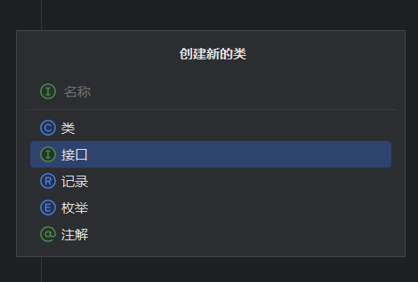
接口语法
xxxxxxxxxxpackage com.learnjava.statics;
public interface ap { public int age = 19; public void show();}//Java接口中除了常量和抽象方法外，不能有其他对象 在接口中定义的成员变量为常量
在接口中定义的方法为抽象方法
接口是不能创建对象的；接口是用来被类实现的（implements），实现接口的类被称为实现类。
xxxxxxxxxx修饰符 class 实现类名 implements 接口1，接口2，接口3，...{//成员变量//成员方法}
一个类可以实现多个接口，实现类实现多个接口时，必须 重写完全部接口的全部抽象方法，否则这个类也需要定义成抽象类
接口的优点
弥补了类单继承的不足，一个类可以同时实现多个接口。
可以实现面向接口编程，更加灵活方便的切换业务实现。
综合案例
学生信息系统：两套方案如下
能打印所有学生信息，能打印所有学生的平均分。
能打印所有学生信息（男女生人数），能打印所有学生的平均分（去除最高分和最低分）。
要求：系统可以灵活的切换这两套输出方案
xxxxxxxxxx//接口package com.student;
public interface jiekou { //打印所有信息 void printall();
//打印平均成绩 void printgrade();}xxxxxxxxxx//设计学生类。记录学生信息package com.student;
public class studentdata { private String name; private String genner; private double grade;
public studentdata() { }
public studentdata(String name, String genner, double grade) { this.name = name; this.genner = genner; this.grade = grade; }
public String getName() { return name; }
public void setName(String name) { this.name = name; }
public String getGenner() { return genner; }
public void setGenner(String genner) { this.genner = genner; }
public double getGrade() { return grade; }
public void setGrade(double grade) { this.grade = grade; }}xxxxxxxxxx//实现方案1package com.student;
import java.util.ArrayList;
public class studentop1 implements jiekou {
public void printall(ArrayList<studentdata> s) { System.out.println("--------学生的全部信息--------"); for (int i = 0; i < s.size(); i++) { System.out.println(String.format("姓名：%s，性别：%s，成绩：%.2f", s.get(i).getName(), s.get(i).getGenner(), s.get(i).getGrade())); } }
public void printgrade(ArrayList<studentdata> s) { System.out.println("--------学生的成绩信息--------"); double sumgrade = 0.0; for (int i = 0; i < s.size(); i++) { sumgrade += s.get(i).getGrade(); } System.out.println(String.format("平均成绩：%.2f", sumgrade / s.size())); }}xxxxxxxxxx//实现方案2package com.student;
import java.util.ArrayList;
public class studentop2 implements jiekou {
public void printall(ArrayList<studentdata> s) { System.out.println("--------学生的全部信息--------"); int boy = 0, girl = 0; for (int i = 0; i < s.size(); i++) { System.out.println(String.format("姓名：%s，性别：%s，成绩：%.2f", s.get(i).getName(), s.get(i).getGenner(), s.get(i).getGrade())); if (s.get(i).getGenner().equals("男")) { boy++; } else { girl++; } } System.out.println(String.format("男生：%d,女生：%d", boy, girl));
}
public void printgrade(ArrayList<studentdata> s) { System.out.println("--------学生的成绩信息--------"); double sumgrade = 0.0; double max = s.get(0).getGrade(); double min = s.get(0).getGrade(); for (int i = 0; i < s.size(); i++) { double j = s.get(i).getGrade(); if (j > max) { max = j;
} else if (j < min) { min = j;
} sumgrade += j;
} System.out.println(String.format("平均成绩（去除最高和最低）：%.2f", (sumgrade - max - min) / (s.size() - 2))); }}xxxxxxxxxx//测试类package com.student;
public class tex { public static void main(String[] args) { classroom s = new classroom(); s.showall(); s.showagrade(); }
}其他细节
接口中新增的三种方法（JDK8版本以上）
默认方法：必须使用default修饰，默认被public修饰 默认方法可以带方法体的。 默认方法不需要重写
xxxxxxxxxxpackage com.learnjava.statics;public interface a21 {public default void shows(){//默认方法可以有方法体，不会报错}}私有方法：使用private 修饰（jdk9以上可用），默认被public修饰
静态方法：必须使用static修饰，默认被public修饰
内部类
成员内部类（*） 静态成员内部类在（JDK16后才支持）
静态内部类（*）
有static修饰的内部类，属于外部类自己持有的 类有的，静态内部类都有。 可以直接访问外部类的静态成员，不可以直接访问外部类的实例成员
局部内部类（*）
匿名内部类（⭐） 匿名内部类是一种特殊的内部类，不需要为这个类声明名字
xxxxxxxxxxnew 类、接口(参数值...){类体（一般为方法重写）}实例代码
xxxxxxxxxxpackage com.inclass;public class tex {public static void main(String[] args) {new animal() {//编译器会把这个内部类编译成一个子类，之后会立即创建出一个子类对象public void jiao() {}};}}abstract class animal {public abstract void jiao();}匿名内部类的使用场景 常作为一个参数传输给方法
xxxxxxxxxxpackage com.inclass;public class tex {public static void main(String[] args) {//作为参数传递给dothisdothis(new animal() {//编译器会把这个内部类编译成一个子类，之后会立即创建出一个子类对象public void jiao() {System.out.println("狗在汪汪叫");}});}public static void dothis(animal a) {a.jiao();}}abstract class animal {public abstract void jiao();}
枚举
认识枚举
枚举是一种特殊的类
枚举类的语法格式：
xxxxxxxxxx修饰符 enum 枚举类名{//枚举的第一行必须罗列名称名称1，名称2，名称......;//其他成员}
枚举类的特点
枚举类的第一行只能罗列一些名称，这些名称都是常量，并且每个常量记住的都是枚举类的一个对象。
枚举类的构造器是私有的，因此枚鱼雷对外不能创建对象。
枚举类都是最终类，不能被继承
枚举类从第二行开始，可以定义类的其他成员
编译器为枚举类新增了几个方法。并且枚举类都是继承：java.lang.Enum类的，也会继承到一些方法
枚举的应用场景 用来表示一组参数，作为参数进行传输
泛型
在定义类，接口，方法时，同时声明了一个或多个类型变量<E>，称为泛型类，泛型接口，泛型方法，它们统称为泛型
泛型类
定义泛型类的语法
xxxxxxxxxx//修饰符 class 类名<类型变量,类型变量,...>{
//}public class ArrayList<E>{
}
泛型接口
定义的语法
xxxxxxxxxx修饰符 interface 接口名<类型变量,类型变量,...>{...}
xxxxxxxxxxpublic interface a123<int,String>{
}场景：系统需要处理学生和老师的数据，提供两个功能：保存对象数据，根据名称查询数据
xxxxxxxxxxpackage com.jiekou;
public interface school<T> {//可能传入老师或学生的对象，使用泛型定义一个接口
void add(T t);}
泛型方法
泛型方法定义语法
xxxxxxxxxx修饰符 <类型变量,类型变量,...> 返回值类型 方法名(形参列表){}
xxxxxxxxxxpackage com.jiekou;
public class tex { public static void main(String[] args) {
}
public static <T> T TEX(T t) {//此时，输入的t是什么类型，返回值就是什么类型 return t; }}泛型的上下限
泛型上限：? extends A——能接受的必须是A或者其子类
泛型下限：? super A——能接受的必须是A或者A的父类
泛型注意事项
泛型擦除：泛型是工作在编译阶段的，一旦编译成class文件，class中就不存在泛型了。
反省不支持基本数据类型，只支持对象类型（引用数据类型）
常用API
object类
object类是类层结构的根，每个类都有object类作为超类。
| 方法名 | 返回值类型 | 说明 |
|---|---|---|
| toString() | String | 返回对象字符串表示形式 |
| equals() | boolean | 判断两个对象是否相等 |
| clone() | object | 克隆对象 |
浅克隆
拷贝出的新对象和原来对象中的数据一模一样（引用类型只拷贝其地址）
深克隆
对象中的基本类型的数据直接拷贝
对象中的字符串数据拷贝地址
对象中的其他对象不会拷贝地址，会重新创建对象
objects
objects类是一个工具类，其中提供了很多操作对象的静态方法。
| 方法名 | 返回值 | 说明 |
|---|---|---|
| equals() | boolean | 先做非空判断，再比较两个对象 |
| inNull() | boolean | 判断对象是否为非空，为空返回true，反之false |
| nonNull() | boolean | 判断对象是否不为空，不为空返回true，反之false |
包装类
包装类就是把基本类型的数据包装成对象
| 基本数据类型 | 包装类（引用数据类型） |
|---|---|
| byte | Byte |
| short | Short |
| int | Inteager |
| long | Long |
| char | Character |
| float | Float |
| double | Double |
| boolean | Boolean |
注意：Integer()已过时，可以使用下面的语法，将int包装成对象
xxxxxxxxxxInteger a = Integer.valueOf(123);自动装箱机制：自动把基本类型的数据转换成对象
xxxxxxxxxxInteger a = 12;自动拆箱机制：自动把包装类型转换成基本数据类型
xxxxxxxxxxint a1 =a;把基本数据类型转成字符串
xxxxxxxxxxpackage com.jiekou;public class tex {public static void main(String[] args) {Integer a = 123;String b = Integer.toString(a);System.out.println(b + 1);String c = a.toString();System.out.println(c + 2);String d = a + "";System.out.println(d + 3);}}把字符串转换成基本数据类型
xxxxxxxxxxpackage com.jiekou;public class tex {public static void main(String[] args) {String a = "123";System.out.println(Integer.parseInt(a) + 1);System.out.println(Integer.valueOf(a) + 1);}}
StringBuilder
StringBuilder代表可变字符串对象，相当于一个容器，它里面装的字符串是可以改变的，就是用来操作字符串的。
StringBuilder相较于String的好处：更适合做字符串修改操作，效率更高，代码更加简洁。
| 构造器 | 说明 |
|---|---|
| StringBuilder() | 创建一个空白的可变字符串对象，不包含内容 |
| StringBuilder() | 创建一个指定字符串内容的可变字符串对象 |
| 方法名称 | 返回值类型 | 说明 |
|---|---|---|
| append(任意类型) | StringBuilder | 添加数据并返回StringBuilder对象本身 |
| reverse() | StringBuilder | 将对象的内容反转 |
| length() | int | 返回对象内容的长度 |
| toString() | String | 把StringBuilder转换为String |
xxxxxxxxxxpackage com.jiekou;public class tex {public static void main(String[] args) {StringBuilder a = new StringBuilder("hello");a.append(" world");System.out.println(a);// hello worlda.reverse();System.out.println(a);// dlrow ollehSystem.out.println(a.length());// 11String b = a.toString();System.out.println(b);}}
StringBuilder是支持链式编程的
StringBuffer
StringBuffer和StringBuilder的用法一模一样 但StringBuffer是线程安全的，StringBuilder是线程不安全的。
StringJoiner
和StringBuilder一样，也是用来操作字符串的，也可以看作一个容器，创建之后里面的内容是可变的。
StringJoiner不仅提高字符串的操作效率，并且在有些场景下使用它操作字符串，代码会更加简洁
| 构造器 | 说明 |
|---|---|
| StringJoiner(间隔符号) | 创建一个StringJoiner对象，指定拼接时的间隔符号。 |
| StringJoiner(间隔符号，开始符号，结束符号) | 创建一个StringJoiner对象，指定拼接时的间隔符号，开始符号和结束符号。 |
| 方法名 | 返回值类型 | 说明 |
|---|---|---|
| add() | StringJoiner | 添加数据，返回对象本身 |
| length() | int | 返回长度（字符出现的个数） |
| toString() | String | 返回一个字符串 |
Math
Math代表数学，是一个工具类，里面提供的都是对数据进行操作的一些静态方法。
Math类常用的方法
| 方法名 | 返回值类型 | 说明 |
|---|---|---|
| abs(int a) | int | 获取参数绝对值 |
| ceil( double a) | double | 向上取整 |
| floor(double a) | double | 向下取整 |
| round(float a) | int | 四舍五入 |
| max(int a,int b)/min | int | 获取两个数的最大值/最小值 |
| pow(double a,double b) | double | 返回a的b次幂 |
| random() | double | 返回值为double的随机值，范围（0.0-1.0） |
xxxxxxxxxxpackage com.jiekou;
public class tex { public static void main(String[] args) { //abs(int a)int 获取参数绝对值 System.out.println(Math.abs(-1));//1 //ceil( double a)double向上取整 System.out.println(Math.ceil(3.14));//4.0 //floor(double a)double向下取整 System.out.println(Math.floor(3.14));//3.0 //round(float a)int四舍五入 System.out.println(Math.round(3.14));//3 System.out.println(Math.round(3.66));//4 //max(int a,int b)int获取两个数的最大值 System.out.println(Math.max(1, 2));//2 //pow(double a,double b)double返回a的b次幂 System.out.println(Math.pow(3, 3));//27.0 //random()double返回值为double的随机值，范围（0.0-1.0） System.out.println(Math.random()); }}
System
System代表程序所在的系统，是一个工具类
System类常用方法
| 方法名 | 返回值类型 | 说明 |
|---|---|---|
| exit(int status)该参数作为状态码0作为人为关闭，非零代表异常关闭 | void | 终止当前运行的虚拟机 |
| currentTimeMills() | long | 返回当前系统的时间（毫秒） |
Runtime
代表程序所在的运行环境。 它是一个单例类。只能提供一个对象。
Runtime常用方法
| 方法名 | 返回值类型 | 说明 |
|---|---|---|
| getRuntime() | Runtime | 返回与当前Java应用程序关联的运行时对象 |
| exit(int status) | void | 终止当前运行的虚拟机 |
| availableProcessors() | int | 返回Java虚拟机可用的处理器数 |
| totalMemory() | long | 返回Java虚拟机中的内存总量 |
| freeMemory() | long | 返回Java虚拟机中可用内存 |
| exec(String command) | Process | 启动某个程序，并返回代表该程序的对象 |
（⭐）BigDecimal
用于解决浮点型运算时，出现结果失真的问题
BigDecimal常用构造器
| 构造器 | 说明 |
|---|---|
| BigDecimal(double a1) 不推荐 | 将double转换为BigDecimal |
| BigDecimal(string a1) | 将string转换成BigDecimal |
| 方法名 | 返回值类型 | 说明 |
|---|---|---|
| valueOf(double a1) | BigDecimal | 将double转换成BigDecimal |
| add(BigDecimal b) | BigDecimal | 加法 |
| subtract(BigDecimal b) | BigDecimal | 减法 |
| multiply(BigDecimal b) | BigDecimal | 乘法 |
| divide(BigDecimal b) | BigDecimal | 除法 |
| divide(另一个BigDecimal对象，精确即为，舍入模式) | BigDecimal | 除法，可以控制精确到小数几位 |
| doubleValue() | BigDecimal | 将BigDecimal转换成doule |
xxxxxxxxxxpackage com.jiekou;
import java.awt.geom.QuadCurve2D;import java.math.BigDecimal;import java.math.RoundingMode;import java.util.Random;
public class tex { public static void main(String[] args) { //BigDecimal(string a1)将string转换成BigDecimal double a = 4.4; double b = 2.2; BigDecimal a1 = new BigDecimal(Double.toString(a)); BigDecimal b1 = new BigDecimal(Double.toString(b));
// valueOf(double a1)BigDecimal将double转换成BigDecimal BigDecimal a2 = BigDecimal.valueOf(a); BigDecimal b2 = BigDecimal.valueOf(b);
// add(BigDecimal b)BigDecimal加法 System.out.println(a2.add(b2));
//subtract(BigDecimal b)BigDecimal减法 System.out.println(a2.subtract(b2));
// multiply(BigDecimal b)BigDecimal乘法 System.out.println(a2.multiply(b2));
//divide(BigDecimal b)BigDecimal除法 System.out.println(a2.divide(b2));
// divide(另一个BigDecimal对象，精确即为，舍入模式)BigDecimal除法，可以控制精确到小数几位 System.out.println(a2.divide(b2, 2, RoundingMode.HALF_UP));
// doubleValue()BigDecimal将BigDecimal转换成doule System.out.println(a2.doubleValue());
}}
时间类
传统时间（JDK8以前）
这些API很多都已经过时了，不推荐使用！推荐使用JDK8以后新增的时间API
Date（已过时） 代表时间和日期
构造器 说明 Date() 创建一个Date对象，代表系统当前的日期时间 Date(long time) 把时间毫秒值转换成Date日期对象 常用方法
方法 返回值类型 说明 getTime() long 返回1970年1月1日 00:00:00到现在的毫秒数 setTime() void 设置日期对象的时间转换为当前时间毫秒值所对应的时间 SimpleDateFormat 简单日期格式化，可以把日期对象，时间毫秒值格式化成我们想要的格式
常见构造器
构造器 说明 SimpleDateFormat(String p) 创建简单日期格式化对象，并封装时间的格式 方法 返回值类型 说明 format(Date date) String 将日期格式化成日期/时间字符串 format(Object time) String 将时间毫秒值转换成日期/时间字符串 xxxxxxxxxxpackage com.jiekou;import java.text.SimpleDateFormat;import java.util.Date;public class tex {public static void main(String[] args) {Date d = new Date();System.out.println(d);//Sun Jul 28 22:05:45 CST 2024SimpleDateFormat a = new SimpleDateFormat("yyyy-MM-dd HH:mm:ss EEE");System.out.println(a.format(d));//2024-07-28 22:05:45 周日}}时间格式常见符号
符号 含义 y 年 M 月 d 日 H 时 m 分 s 秒 EEE 星期 a 上午/下午 SimpleDateFormat可以将字符串的时间解析成日期对象 注意：解析的时间格式必须和定义的时间格式相同，否则程序会出现BUG
方法 返回值类型 说明 parse(String s) Date 把字符串时间解析成日期对象 xxxxxxxxxxpackage com.jiekou;import java.text.ParseException;import java.text.SimpleDateFormat;import java.util.Date;public class tex {public static void main(String[] args) throws ParseException {String t = "2024-07-28 22:05:45 周日";SimpleDateFormat a = new SimpleDateFormat("yyyy-MM-dd HH:mm:ss EEE");Date b = a.parse(t);System.out.println(b);//Sun Jul 28 22:05:45 CST 2024}}Calendar Calendar是一个日历对象，代表的是系统此刻时间对应的日历，它可以单独获取，修改时间的年、月、日、时、分、秒等。
Calendar日历类常用的方法
方法 返回值 说明 getInstance() Calendar 获取当前日历对象 get(int field) int 获取日历中的某个信息 getTime() final 获取日期对象 getTimeInMillis() long 获取时间毫秒值 set(int field,int value) void 修改日历的某个信息 add(int field,int amount) void 为某个信息增加/减少指定的值 xxxxxxxxxxpackage com.jiekou;import java.text.ParseException;import java.text.SimpleDateFormat;import java.time.Instant;import java.util.Calendar;import java.util.Date;public class tex {public static void main(String[] args) throws ParseException {Calendar a = Calendar.getInstance();System.out.println(a);//打印出的全部信息System.out.println(a.get(Calendar.YEAR));//取年System.out.println(a.get(Calendar.DAY_OF_MONTH));//取日//其他同理System.out.println(a.getTime());System.out.println(a.getTimeInMillis());a.set(Calendar.MONTH, 7);System.out.println(a.get(Calendar.MONTH));//取日a.add(Calendar.MONTH, 2);System.out.println(a.get(Calendar.MONTH));//取日}}
新时间API（JDK8及以后）
推荐使用新的时间API创建事件对象！
这些方式创建出来的对象都是不可变对象，数据修改后会返回一组新的数据，不会修改原来的数据。 这样可以保留原来的日期对象。
LocalDate、LocalTime、LocalDateTime
LocalDate：本地日期（年、月、日、星期） LocalTime：本地时间（时，分，秒，纳秒） LocalDateTime：代表本地日期、时间（年、月、日、星期、时，分，秒，纳秒）
获取对象的方法 获取系统当前时间对象
| API | 获取对象方法 |
|---|---|
| LocalDate | LocalDate a = LocalDate.now() |
| LocalTime | LocalTime a = LocalTime.now() |
| LocalDateTime | LocalDateTime a = LocalDateTime.now() |
获取时间的方法：以get开头
修改时间信息的方法：以with开头
把时间信息加多少：以plus开头
把时间信息减多少：以minus开头
获取指定日期的LocalDate对象：LocalDate of(int year,int month,int day)
判断两个日期是否相等：equals 时间1 时间2
ZoneId、ZoneDateTime
ZoneId：时区ID
ZoneDateTime：带有时区的时间
xxxxxxxxxxpackage com.jiekou;
import java.text.ParseException;import java.time.ZoneId;import java.time.ZonedDateTime;
public class tex { public static void main(String[] args) throws ParseException { //ZoneId的一些方法 System.out.println(ZoneId.systemDefault());//获取系统的默认时区 //输出：Asia/Shanghai
//展示java支持的所有时区ID System.out.println(ZoneId.getAvailableZoneIds());
//这个方法可以把时区封装成一个ZoneId对象 ZoneId a = ZoneId.of("America/Cuiaba");
//获取ZoneId处的时间 ZonedDateTime B = ZonedDateTime.now(a); System.out.println(B); }}
常用方法和LocalDate、LocalTime、LocalDateTime相似
Instant
通过获取instant的对象可以拿到此刻的时间，该事件由两部分组成：从1970年1月1日 0 时起至今的总秒数 和 不足1秒的纳秒数。
| 方法名 | 返回值类型 | 说明 |
|---|---|---|
| now() | 获取当前时间的 Instant对象 | |
| getEpochSecond() | long | 从时间线开始的秒数 |
| GetNano() | int | 获取上面的纳秒数 |
| plusxxx | 增加xx时间 | |
| minusxxx | 减少xx时间 | |
| equals,isBefore,isAfter | 判断方法 |
Instant精确，可以获得纳秒值，可以做代码的性能分析，或记录用户操作的时间点。
DateTimeFormatter
格式化器，用于时间的格式化和解析
常用方法
| 方法名 | 返回值类型 | 说明 |
|---|---|---|
| ofPattern(时间格式) | DateTimeFormatter | 获取格式化器对象 |
| format(时间对象) | String | 格式化时间 |
xxxxxxxxxxpackage com.jiekou;
import java.text.ParseException;import java.time.LocalDateTime;import java.time.format.DateTimeFormatter;
public class tex { public static void main(String[] args) throws ParseException { //格式化时间 DateTimeFormatter a = DateTimeFormatter.ofPattern("yyyy年MM月dd日 HH:mm:ss"); LocalDateTime A = LocalDateTime.now(); System.out.println(a.format(A));//2024年07月29日 13:10:18 //格式化方法2 //使用LocalDateTime的format方法，传入时间格式化器 System.out.println(A.format(a));//2024年07月29日 13:10:18 //解析字符串格式的时间 String time = "2024年07月29日 13:10:18"; System.out.println(LocalDateTime.parse(time, a));//传入字符串时间和时间格式化器 //2024-07-29T13:10:18 }}
Duration、Period
这两个类是用来计算时间间隔的
Period：计算两个日期对象（LocalDate）日期间隔（年、月、日）
Period常用方法
| 方法名 | 返回值类型 | 说明 |
|---|---|---|
| between(LocalDate 开始,LocalDate 结束) | Period | 传入两个日期对象，得到Period对象 |
| getYears() | int | 计算年份间隔并返回 |
| getMonths() | int | 计算月份间隔并返回 |
| getDays() | int | 计算天数间隔并返回 |
xxxxxxxxxxpackage com.jiekou;
import java.text.ParseException;import java.time.LocalDate;import java.time.Period;
public class tex { public static void main(String[] args) throws ParseException { LocalDate a = LocalDate.of(2024, 3, 15); LocalDate b = LocalDate.of(2026, 12, 22); Period c = Period.between(a, b); //获取年的间隔 System.out.println(c.getYears());//2
//获取月的间隔 System.out.println(c.getMonths());//9
//获取日的间隔 System.out.println(c.getDays());//7
}}
Duration：计算时间对象（LocalTime）间隔（时、分、秒、纳秒）
支持LocalTime，LocalDateTime，Instant等时间
| 方法名 | 返回值 | 说明 |
|---|---|---|
| between(开始时间,结束时间) | Duration | 传入两个事件对象，得到Duration对象 |
| toDays() | long | 计算间隔多少天并返回 |
| toHours() | long | 计算间隔多少小时并返回 |
| toMinutes() | long | 计算间隔多少分钟并返回 |
| toSeconds() | long | 计算间隔多少秒并返回 |
| toMillis() | long | 计算间隔多少毫秒并返回 |
| toNanos() | long | 计算间隔多少纳秒并返回 |
使用方法和上面一样
Arrays
是用来操作数组的一个工具类
常用方法
| 方法名 | 返回值类型 | 说明 |
|---|---|---|
| toString(类型[] a) | String | 返回数组的内容 |
| copyOfRange(类型[] a,起始索引,结束索引) | int[] | 拷贝指定范围内的数组 |
| copyOf(类型[] a,int 新数组长度) | 拷贝数组，常用于数组扩容 | |
| setAll(double[] a, IntToDoubleFunction) | 把数组中的原数据修改为新数据 | |
| sort(类型[] a) | 对数组进行排序，默认升序 |
Lambda（JDK8+）
Lambda表达式，适用于简化匿名内部类代码的写法
代码格式
xxxxxxxxxx(被重写方法的形参列表)->{被重写的方法体}
xxxxxxxxxxpackage com.jiekou;
import java.text.ParseException;
public class tex { public static void main(String[] args) throws ParseException {// 匿名内部类 swiming a = new swiming() {
public void swim() { System.out.println("张三在跑步！"); } }; a.swim();
// 使用Lambda表达式简化匿名内部类 swiming b = () -> System.out.println("李四在跑步！"); b.swim(); }}
interface swiming { void swim();}Lambda表达式不能简化所有的匿名内部类，只能简化函数式接口（1.必须是接口 2.接口中只有一个抽象方法）的匿名内部类。
Lambda表达式的省略规则
参数的类型可以省略不写
如果只有一个参数，参数类型可以省略，()也可以省略
如果表达式中的方法体只有一行代码，大括号可以省略，同时也要省略分号！，如果这行代码是return语句，也必须去掉return不写
方法引用（JDK8+）
静态方法引用
方法引用的标志：“ :: ” 两个冒号
类名::静态方法
场景：如果某个Lambda表达式里只调用一个静态方法，并且前后参数的形式一致，就可以使用静态方法引用
实例方法引用
对象名::实例方法
场景：如果某个Lambda表达式里只调用一个实例方法，并且前后参数的形式一致，就可以使用实例方法引用
特定类型方法引用
类型::方法
场景：如果某个Lambda表达式里只调用一个实例方法，且前面参数列表中的第一个参数是作为方法的主调，后面所有参数都作为该实例方法的入参的，就可以使用特定类型方法引用
xxxxxxxxxxpackage com.jiekou;
import java.text.ParseException;import java.util.Arrays;import java.util.Comparator;
public class tex { public static void main(String[] args) throws ParseException { String[] a = {"asur", "mkdir", "jany", "Danny", "Aliai"}; //原始方法 Arrays.sort(a, new Comparator<String>() { public int compare(String o1, String o2) { return o1.compareToIgnoreCase(o2);//忽略大小写 } }); System.out.println(Arrays.toString(a));
//使用Lambda表达式简化 Arrays.sort(a, (o1, o2) -> o1.compareToIgnoreCase(o2));//忽略大小写 System.out.println(Arrays.toString(a));
//使用Lambda特定类型方法引用简化 Arrays.sort(a, String::compareToIgnoreCase);//忽略大小写 System.out.println(Arrays.toString(a));
}}
interface swiming { void swim();}
构造器引用
类名::new
如果某个Lambda表达式里只是在创建对象，并且前后参数情况一直，就可以使用构造器引用
正则表达式
正则表达式就是一些特定字符组成的，代表一个规则
作用：
用来校验数据格式是否正确，如：电话号码，邮箱地址等
在一段文本中查找满足要求的内容
xxxxxxxxxxpackage com.jiekou;
import java.text.ParseException;
public class tex { public static void main(String[] args) throws ParseException { System.out.println(checkphone("21345689785")); System.out.println(checkphone("11345689785")); System.out.println(checkphone("1345689785"));
}
public static boolean checkphone(String P) { return P != null && P.matches("1\\d{10}");//使用正则表达式判断手机号的格式是否正确 }}
正则表达式的书写规则见官方文档。
异常
异常就是代表程序出现的问题
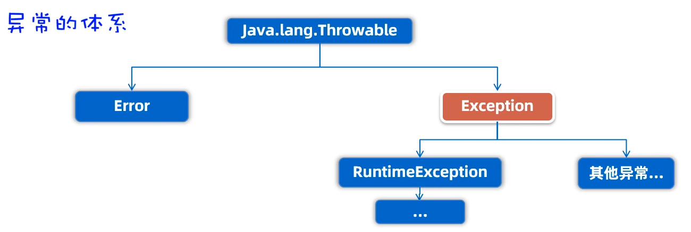
Error：代表系统级错误（严重问题）
Exception：异常，代表我们程序出现的问题
运行时异常：在编译阶段不会出现异常，在代码运行时出现的异常
编译时异常：在编译阶段产生的异常，会出现错误提醒
自定义异常
java无法为所有的问题都提供异常类来代表，若自己遇到某些问题，需要通过异常来代表，就需要自己定义异常类
自定义运行时异常方法
定义一个异常类，继承RuntimeException
重写构造器
通过throw new异常类(xxx)来创建异常对象并抛出
自定义编译时异常方法
定义一个异常类，继承Exception
重写构造器
通过throw new异常类(xxx)来创建异常对象并抛出
异常的处理
在开发中常用的处理异常方法
throws抛出异常
捕获异常，记录异常并提示合适的信息给用户查看
捕获异常，尝试重新修复
集合框架
在Java中整体来看集合体系结构主要分 Collection（单列集合）：每个元素只包含一个值 Map（双列集合）：每个元素包含两个值（键值对）
Collection集合体系
Collection是一个泛型接口
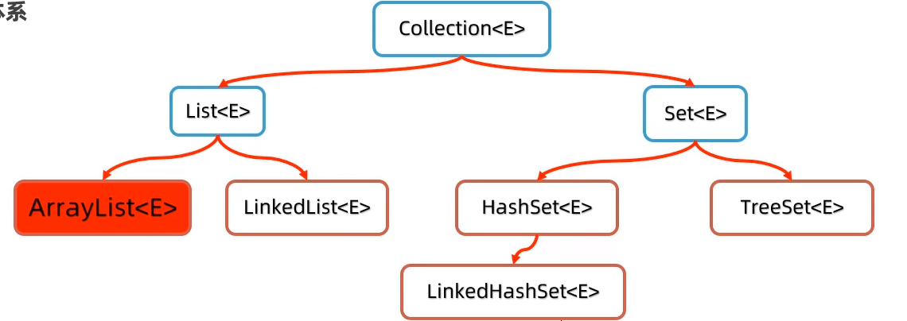
List系列集合的特点：添加的元素是有序的，可重复的，有索引的
如：ArrayList、LinekdList
set系列集合的特点：添加的元素是无序的，不重复的，无索引的
HashSet
LinkedHashSet：元素是有序的
treeset：按照大小默认升序
Collection的常用方法
Collection是单列集合的祖宗，他的方法单列集合都会继承
| 方法名 | 返回值类型 | 说明 |
|---|---|---|
| add(E e) | boolean | 向集合中添加元素 |
| clear() | void | 清空集合 |
| isEmpty() | boolean | 判断集合是否为空 |
| size() | int | 获取集合的大小 |
| contains(Object obj) | boolean | 判断集合中是否包含某个元素 |
| remove(E e) | boolean | 删除某个元素，或有多个，默认删除第一个 |
| toArray() | Object[] | 把集合转换成数组 |
Collection的遍历方式
迭代器 迭代器是用来遍历数组的专用方式(数组无迭代器)，在Java中迭代器的代表是Iterator
迭代器的获取方法
方法 说明 Iterator<E> iterator() 返回集合中的迭代器对象，该迭代器对象默认指向当前集合的第一个元素 Iterator迭代器常用方法
方法 说明 boolean hashNext() 询问当前位置的元素是否存在，存在true，反之false E next() 获取当前位置的元素，并同时将迭代器对象指向下一个元素 xxxxxxxxxxpackage com.jiekou;import java.text.ParseException;import java.util.ArrayList;import java.util.Collection;import java.util.Iterator;public class tex {public static void main(String[] args) throws ParseException {Collection<String> a = new ArrayList<>();a.add("张三");a.add("李四");a.add("王五");a.add("赵六");a.add("张飞");a.add("刘备");Iterator<String> b = a.iterator();//获取a的迭代器对象while (b.hasNext()) {//询问当前位置是否有数据System.out.println(b.next());//如果有数据，输出当前位置的数据}}}
增强for
增强for循环既可以遍历集合，也可以遍历数组
语法格式
xxxxxxxxxxfor(元素的数据类型 变量名:数组或者集合){//循环体}xxxxxxxxxxpackage com.jiekou;import java.text.ParseException;import java.util.ArrayList;import java.util.Collection;public class tex {public static void main(String[] args) throws ParseException {Collection<String> a = new ArrayList<>();a.add("张三");a.add("李四");a.add("王五");a.add("赵六");a.add("张飞");a.add("刘备");for (String b : a) {System.out.println(b);}System.out.println("--------------");String[] c = {"张三", "李四", "王五"};for (String s : c) {System.out.println(s);}}}增强for循环遍历集合本质上就是迭代器遍历集合的简化写法。
lambda表达式 Collection提供了下面的方法
方法 说明 default void forEach(Consumer<? super T> action) 结合lambda遍历集合 xxxxxxxxxxpackage com.jiekou;import java.text.ParseException;import java.util.ArrayList;import java.util.Collection;import java.util.function.Consumer;public class tex {public static void main(String[] args) throws ParseException {Collection<String> a = new ArrayList<>();a.add("张三");a.add("李四");a.add("王五");a.add("赵六");a.add("张飞");a.add("刘备");//初始写法a.forEach(new Consumer<String>() {public void accept(String s) {System.out.println(s);}});//简化1System.out.println("----------------");a.forEach((String s) -> {System.out.println(s);});System.out.println("----------------");//简化2a.forEach(s -> System.out.println(s));System.out.println("----------------");//简化3:方法引用a.forEach(System.out::println);}}
案例：遍历集合中的自定义对象
需求：展示多部电影的信息
xxxxxxxxxxpackage com.jiekou;
import java.text.ParseException;import java.util.ArrayList;import java.util.Collection;import java.util.Iterator;import java.util.function.Consumer;
public class tex { public static void main(String[] args) throws ParseException { //创建集合，存储电影对象 Collection<move> mv = new ArrayList<>(); mv.add(new move("战狼1", 4.2, "吴京")); mv.add(new move("战狼2", 4.5, "吴京")); mv.add(new move("喜羊羊与灰太狼", 4.9, "黄伟明")); mv.add(new move("熊出没", 4.8, "方特"));
//foreach循环遍历 mv.forEach(new Consumer<move>() { public void accept(move move) { System.out.println("-------------------"); System.out.println(STR."片名：\{move.getName()}"); System.out.println(STR."评分：\{move.getScore()}"); System.out.println(STR."作者：\{move.getActor()}");
} });
System.out.println("-----使用lambda表达式简化-----"); // 简化写法 mv.forEach(move -> { System.out.println("-------------------"); System.out.println(STR."片名：\{move.getName()}"); System.out.println(STR."评分：\{move.getScore()}"); System.out.println(STR."作者：\{move.getActor()}"); });
//迭代器循环遍历 System.out.println("------迭代器循环遍历--------"); Iterator<move> v = mv.iterator(); while (v.hasNext()) { move m = v.next(); System.out.println("-------------------"); System.out.println(STR."片名：\{m.getName()}"); System.out.println(STR."评分：\{m.getScore()}"); System.out.println(STR."作者：\{m.getActor()}"); }
//使用增强for遍历 System.out.println("------增强fro循环遍历--------"); for (move move : mv) { System.out.println("-------------------"); System.out.println(STR."片名：\{move.getName()}"); System.out.println(STR."评分：\{move.getScore()}"); System.out.println(STR."作者：\{move.getActor()}"); } }}
List系列集合
特点：有序，可重复，有索引
特有方法 由于List集合是支持索引的，所以该集合有很多索引相关的方法，也继承了Collection的方法，这些方法List系列集合都是支持的。
| 方法 | 返回值 | 说明 |
|---|---|---|
| add(int index, E element) | void | 在集合的指定位置插入元素 |
| remove(int index) | E | 删除指定索引处的元素，返回被删除的元素 |
| set(int index,E element) | E | 修改指定索引处的元素，返回被修改的元素 |
| get(int index) | E | 返回指定索引处的元素 |
xxxxxxxxxxpackage com.jiekou;
import java.text.ParseException;import java.util.ArrayList;import java.util.List;
public class tex { public static void main(String[] args) throws ParseException { //创建一个arraylist集合对象 List<String> s = new ArrayList<>();
//为其添加数据 s.add("张三"); s.add("李四"); s.add("王五"); s.add("趙六"); s.add("张三"); System.out.println(s); System.out.println("1111111111111111111111111");
//在索引2处插入一个数据 s.add(2, "曹操"); System.out.println(s); System.out.println("2222222222222222222222222");
//删除索引0的数据 s.remove(0); System.out.println(s); System.out.println("1111111111111111111111111");
//修改索引0处的数据 s.set(0, "修改"); System.out.println(s); System.out.println("2222222222222222222222222");
//获取索引0处的数据 System.out.println(s.get(0));
/* [张三, 李四, 王五, 趙六, 张三] 1111111111111111111111111 [张三, 李四, 曹操, 王五, 趙六, 张三] 2222222222222222222222222 [李四, 曹操, 王五, 趙六, 张三] 1111111111111111111111111 [修改, 曹操, 王五, 趙六, 张三] 2222222222222222222222222 修改 */ }}
遍历方法
for循环遍历（List系列集合支持索引）
迭代器
增强for循环
Lambda表达式
xxxxxxxxxxpackage com.jiekou;
import java.text.ParseException;import java.util.ArrayList;import java.util.Collection;import java.util.Iterator;import java.util.List;import java.util.function.Consumer;
public class tex { public static void main(String[] args) throws ParseException { //创建一个arraylist集合对象 List<String> s = new ArrayList<>();
//为其添加数据 s.add("张三"); s.add("李四"); s.add("王五"); s.add("趙六"); s.add("张三"); System.out.println(s); System.out.println("1111111111111111111111111");
// for循环遍历（List系列集合支持索引） System.out.println("----------for循环遍历------"); for (int i = 0; i < s.size(); i++) { System.out.println(s.get(i)); }
// 迭代器 System.out.println("------迭代器------"); Iterator<String> a = s.iterator(); while (a.hasNext()) { System.out.println(a.next()); }
// 增强for循环 System.out.println("------增强for循环---------"); for (String d : s) { System.out.println(d); }
// Lambda表达式 System.out.println("------Lambda表达式---------"); s.forEach(s1 -> System.out.println(s1)); }}
ArrayList集合的底层原理
原理
ArrayList是基于数组实现的
利用无参构造器创建的集合，会在底层创建一个默认长度为0的空数组
在添加第一个元素时，底层会创建一个新的长度为10的数组
数组存满时会扩容1.5倍
若一次添加多数据，1.5倍长度放不下时，新创建数组的长度以实际的元素个数为准。
特点
根据索引查询数据速度快：根据地址值+索引定位，查询任意数据耗时相同
删除效率低
添加效率极低
场景
适合根据索引查询数据或数据量不是很大时，查询效率高
不适合数据量太大同时需要频繁进行增删操作的场景
LinkedList集合的底层原理
原理
LinkedList是基于双链表实现的
特点
查询速度慢，查询那个数据都是从头结点开始
增删相对较快 ，对首尾元素增删改查的速度极快
首尾元素操作的特有方法
| 方法名 | 返回值 | 说明 |
|---|---|---|
| addFirst(E e) | void | 在该列表的靠头插入元素 |
| addLast(E e) | void | 在该列表的末尾插入元素 |
| getFirst() | E | 返回列表中的第一个元素 |
| getLast() | E | 返回列表中的最后一个元素 |
| removeFirst() | E | 删除列表中的第一个元素并返回 |
| removeLast() | E | 删除列表中的最后一个元素并返回 |
场景
可以用来设计队列，先进先出，后进后出（两端开口） 开发叫号系统，排队系统。
可以用来设计栈：后进先出，先进后出（一端开口）
Set系列集合
特点
无序：添加数据的顺序和获取出的数据顺序不一致
不重复
无索引
常见实现类
HashSet：无序，不重复，无索引 LinkedHashSet：有序，不重复，无索引 TreeSet：排序（默认升序），不重复，无索引
Set集合的常用方法，基本上就是Collection提供的
HashSet底层原理
是基于哈希表实现的
Hash：哈希值-就是一个int类型的数值，在Java中每个对象都有一个哈希值 在Java中，可以使用Object类的hashCode方法获得对象的哈希值 哈希表是一种增删改查数据性能较好的数据结构。
LinkedHashSet（HashSet的子类）底层原理
基于哈希表（数组、链表、红黑树）
他的每个元素都会额外多一个双链表机制，记录前后元素的位置
TreeSet底层原理
基于红黑树实现的排序
注意：TreeSet规则在存储自定义类型的对象时，必须指定排序规则，否则就会报错
自定义规则的方式
让自定义类实现Comparable接口，重写里面的compareTo方法来指定比较规则
通过调用TreeSet集合的有参构造器，可以设置Comparator对象（比较器对象，指定比较规则）
集合并发修改异常问题
比如：使用迭代器在遍历集合时，又同时在删除集合中的数据，程序就会出现并发修改异常错误
注意：增强for循环就是迭代器的简化写法，其在遍历删除数据时，会出现并发修改异常问题，并且是无法解决的。
例如有一组存有人名的集合数据，找到全部名字带张的并删除
xxxxxxxxxxpackage com.jiekou;
import java.util.ArrayList;import java.util.Iterator;import java.util.List;
public class tex { public static void main(String[] args) { //创建一个arraylist集合对象 List<String> s = new ArrayList<>();
//为其添加数据 s.add("张三"); s.add("李四"); s.add("张五"); s.add("趙六"); s.add("张七");
Iterator<String> a = s.iterator(); while (a.hasNext()) { String B = a.next(); if (B.contains("张")) { s.remove(B);//删除数组中的数据，会报并发修改异常错误 }
}// Exception in thread "main" java.util.ConcurrentModificationException// at java.base/java.util.ArrayList$Itr.checkForComodification(ArrayList.java:1095)// at java.base/java.util.ArrayList$Itr.next(ArrayList.java:1049)// at com.jiekou.tex.main(tex.java:22) //解决方法：使用迭代器的remove方法移除数据 while (a.hasNext()) { String B = a.next(); if (B.contains("张")) { a.remove(); }
} System.out.println(s); //此时就可以正确的删除数据 //[李四, 趙六]
}}
避免在遍历集合删除数据时发生BUG
使用迭代器的remove方法
使用for循环，倒着遍历并删除，或者正向遍历，删除后循环计数器-1
可变参数
是一种特殊的形参，定义在方法、构造器的形参列表里，格式：数据类型...参数名称
可变参数的特点和好处 特点：可以不传入数据给它，可以传一个或多个数据，也可以传一个数组 好处：用来灵活的接收数据
xxxxxxxxxxpackage com.jiekou;
public class tex { public static void main(String[] args) { show();//不传入数据 show(1);//传入一个数据 show(1, 2);//传入多个数据 show(new int[]{1, 2, 3, 4, 5, 6});//传入一个数组数据
}
public static void show(int... a) { //可变参数内部本质就是一个数组 System.out.println(a.length); }}注意： 一个形参列表中只能有一个可变参数 可变参数必须在形参列表的最后一个
Collections工具类
是用来操作集合的工具类
Collections常用的静态方法
| 方法名 | 说明 |
|---|---|
| public static <T> boolean addAll(Collection<? super T> c,T...elements) | 给集合批量添加元素 |
| public static void shuffle(List<?> list) | 打乱List集合的元素顺序 |
| public static <T> sort(List<?> list) | 对List集合中的元素进行升序排序 |
| public static <T> sort(List<?> list,Comparator<? super T> c) | 对List集合中的元素按照比较器指定的规则进行排序 |
Map集合体系
概述
Map集合称为双列集合，格式：{key1=value1,key2=value2,...}，一次需要存储一对数据作为一个元素
Map集合的每个元素“key=value”被称为一个键值对/键值对对象/一个Entry对象，Map集合也被称为“键值对集合”
Map集合中的所有键是不能重复的，键和值是一一对应的，每个键只能对应一个值，值可以重复
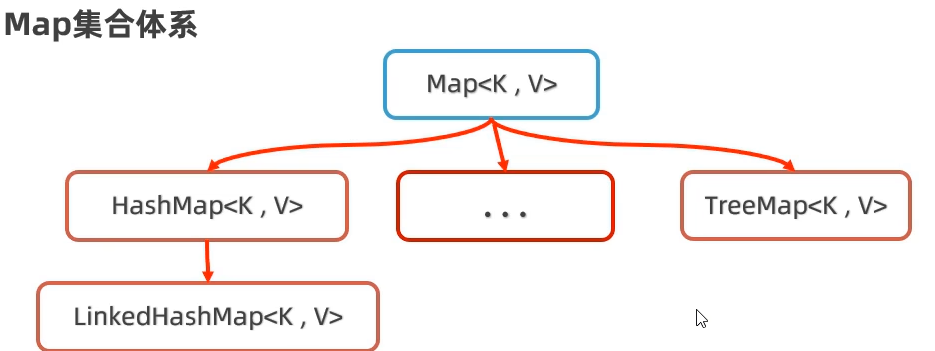
特点 HashMap（由键决定特点）：无需，不重复，无索引（用的最多） LinkedHashMap（由键决定特点）：有序，不重复，无索引 TreeMap（由键决定特点）：按照键的大小升序排序，不重复，无索引
常用方法
| 方法 | 返回值类型 | 说明 |
|---|---|---|
| size() | int | 获取集合大小 |
| clear | void | 清空集合 |
| isEmpty() | boolean | 判断集合是否为空 |
| get(Object key) | v | 根据键获取对应的值 |
| remove(Object key) | v | 根据键删除对应的值 |
| containsKey(Object key) | boolean | 判断是否包含某个键 |
| containsValue(Object value) | boolean | 判断是否包含某个值 |
| keySet() | set<k> | 获取Map集合的全部键 |
| values | collection<v> | 获取Map集合的全部值 |
| putAll | 将一个集合中的数据倒入到另一个集合 |
xxxxxxxxxxpackage com.jiekou;
import java.util.HashMap;import java.util.Map;
public class move { public static void main(String[] args) { Map<Integer, String> a = new HashMap<>(); a.put(1, "涨三"); a.put(2, "里斯"); a.put(4, "王武"); a.put(5, "赵丽"); a.put(3, "叁柒");
//size()int获取集合大小 System.out.println(a.size());
//clearvoid清空集合 //a.clear(); System.out.println(a);
//isEmpty()boolean判断集合是否为空 System.out.println(a.isEmpty()); //a.clear(); System.out.println(a.isEmpty());
//get(Object key)v根据键获取对应的值 System.out.println(a.get(2));
//remove(Object key)v根据键删除对应的值 System.out.println(a.remove(1)); System.out.println(a);
//containsKey(Object key)boolean判断是否包含某个键 System.out.println(a.containsKey(1)); System.out.println(a.containsKey(2));
//containsValue(Object value)boolean判断是否包含某个值 System.out.println(a.containsValue("涨三")); System.out.println(a.containsValue("里斯"));
//keySet()set\<k>获取Map集合的全部键 System.out.println(a.keySet());
//valuescollection\<v>获取Map集合的全部值 System.out.println(a.values());
//将其他集合中的数据倒入到另一个集合 Map<Integer, String> b = new HashMap<>(); b.put(7, "涨三"); b.put(8, "里斯"); a.putAll(b); System.out.println(a); }}
遍历方式
键找值 先获取map集合的所有键，再通过遍历键查找值
xxxxxxxxxxpackage com.jiekou;import java.util.Collection;import java.util.HashMap;import java.util.Map;public class move {public static void main(String[] args) {Map<Integer, String> a = new HashMap<>();a.put(1, "涨三");a.put(2, "里斯");a.put(4, "王武");a.put(5, "赵丽");a.put(3, "叁柒");Collection<Integer> b = a.keySet();for (Integer i : b) {System.out.println(a.get(i));}}}键值对 把键值对，看成一个整体进行遍历，（代码难度大）
xxxxxxxxxxpackage com.jiekou;import java.util.HashMap;import java.util.Map;import java.util.Set;public class move {public static void main(String[] args) {Map<Integer, String> a = new HashMap<>();a.put(1, "涨三");a.put(2, "里斯");a.put(4, "王武");a.put(5, "赵丽");a.put(3, "叁柒");Set<Map.Entry<Integer, String>> a1 = a.entrySet();for (Map.Entry<Integer, String> integerStringEntry : a1) {System.out.println(integerStringEntry.getKey());System.out.println(integerStringEntry.getValue());}}}Lambda表达式 这种方式非常简单
xxxxxxxxxxpackage com.jiekou;import java.util.HashMap;import java.util.Map;public class move {public static void main(String[] args) {Map<Integer, String> a = new HashMap<>();a.put(1, "涨三");a.put(2, "里斯");a.put(4, "王武");a.put(5, "赵丽");a.put(3, "叁柒");a.forEach((integer, s) -> {System.out.println(integer);System.out.println(s);});}}
HashMap
HashMap的底层原理和HashSet的底层原理是一样的，都是基于哈希表实现的
HashMap集合是一种增删改查数据性能较好的集合
HashMap的数据是无需的，不能重复的，没有索引支持的
HashMap的键依赖hashCode方法和equals方法，保证键的唯一性
如果键存储的是自定义对象，可以通过重写hashCode方法和equals方法，这样可以保证多个对象内容一样时，HashMap集合就认为是重复的。
LinkedHashMap
LinkedHashMap底层数据结构是基于哈希表实现的，每个键值对元素又多了一个双链表的机制记录元素的顺序。 LinkedHashSet集合的底层原理就是LinkedHashMap。
TreeMap
TreeMap的底层原理和TreeSet一样，利用了红黑树排序。 如果TreeMap存储的自定义类型可以自定义排序规则。 1.让类实现Comparable接口，重写comparTo比较规则。 2.TreeMap集合有一个有参构造器，支持创建Comparator比较器对象来指定规则。
集合嵌套
使用场景：记录省份及其城市名。
例如：河北省=石家庄市,沧州市,... 就可以使用集合嵌套的方式，省份名称作为键，城市集合作为值。
Stream流
认识c Stream是JDK8开始新增的一套API，可以用于操作集合或数组的数据。
Stream的优势 Stream流大量结合了lambda的语法编程，提供了一些更强大，更简单的方式操作集合或者数组中的数据，更简洁，代码可读性更好。
Stream流的用法
获取集合/数组的Stream流
集合
Collection提供的方法 说明 stream() 获取当前集合的stream流 xxxxxxxxxx//LIST集合获取stream流List<String> a = new ArrayList<>();a.add("涨三");a.add("里斯");a.add("王武");a.add("赵丽");a.add("叁柒");System.out.println(a.stream().filter(s -> s.contains("王")).toList());//SET集合获取stream流Set<String> b = new HashSet<>(List.of(new String[]{"张飞", "曹操", "王强", "孙悟空", "猪八戒", "小王子"}));System.out.println(b.stream().filter(s -> s.length() == 3).toList());//Map集合获取stream流Map<Integer, String> c = new HashMap<>();c.put(1, "涨三");c.put(2, "里斯");c.put(4, "王武");c.put(5, "赵丽");c.put(3, "叁柒");System.out.println(c.entrySet().stream().filter((x) -> x.getKey() == 2).toList());数组
Arrays提供的方法 说明 stream(T[] arr) 获取当前数组的stream流 Stream类提供的方法 说明 of(T...VALUES) 获取当前接受数据的stream流 xxxxxxxxxx//数组获取stream流int[] d = {1, 2, 3, 11, 12, 13, 4, 5, 10};Arrays.stream(d).filter(e -> e > 5);Stream.of(d);使用Stream流的常用方法，支持链式编程
方法名 返回值 说明 filter(Predicate<? super T> predicate) Stream<T> 对流中的数据进行筛选 sorted() Stream<T> 对元素进行升序排序 sorted(Comparator <? super T> comparator) Stream<T> 按照规则进行排序 limit(long maxSize) Stream<T> 获取前几个元素 skip(long n) Stream<T> 跳过前几个元素 distinct() Stream<T> 去除流中的重复元素 map(Function<? super T,? extends R> mapper) Stream<R> 对元素进行加工并返回新的数据流 concat(Stream a,Stream b) Stream<T> 合并ab数据流 使用Stream流终结方法
方法名 说明 forEach(Consumer) 对流云算完后的元素进行遍历 const() 统计流运算完成后的元素个数 max() 获取流运算完成后的最大元素 min() 获取流运算完成后的最大元素 收集stream流：把stream流操作后的结果转到集合或数组中返回
stream流的常用终结方法 说明 collect() 把流处理后的结果收集到一个集合中 toArray() 把流处理后的结果收集到一个数组中 Collectors工具类提供的收集方法 说明 toList() 把元素收集到List集合中 toSet() 把元素收集到Set集合中 toMap() 把元素收集到Map集合中
文件操作
File
File是java.io包下的类，File类的对象，用于代表当前操作系统的文件 File可以获取文件信息（大小，文件名等），判断文件类型，创建删除文件或文件夹等功能 File只能对文件本身进行操作，不能读写文件内部存储的数据
创建File对象
构造器 说明 File(String Pathname) 根据文件路径创建文件对象 File(String Parent, String child) 根据父路径和子路径的名字创建文件对象 File(File parent, String child) 根据父路径对应文件对象和子路径名字创建文件对象 File的常用方法 判断文件类型，获取文件信息
方法名 返回值类型 说明 exists() boolean 判断当前文件对象对应的文件路径是否存在 isFile() boolean 判断当前文件指代的是否是文件 isDirectory() boolean 判断当前文件对象指代的是否是文件夹 getName() String 获取文件名称（含后缀） length() long 获取文件大小，字节数 lastModified() long 获取文件最后修改的时间 getPath() String 获取创建文件对象时使用的路径 getAbsolutePath() String 获取绝对路径 创建文件、删除文件
方法名 返回值类型 说明 createNewFile() boolean 创建一个新文件 mkdir() boolean 创建文件夹（只能创建一级） mkdirs() boolean 创建文件夹（可以创建多级） delete() boolean 删除文件，或空文件夹，不能删除非空文件夹 遍历文件夹
方法名 返回值类型 说明 list() String[] 获取当前目录下的所有一级文件夹的名称到字符串数组 listFiles() File[] 获取当前目录下的所有一级文件对象到File[] listFiles()注意事项
当主调是文件或者路径不存在时，返回null
当主调文件夹为空时，返回长度为0的数组
当主调是一个非空文件夹时，将所有一级文件和文件夹的路径放在File数组中返回
当主调是一个文件夹，且由隐藏文件时，将所有一级文件和文件夹的路径放在File数组中返回，包含隐藏文件
当主调是一个文件夹，但没有权限访问该文件时，返回null
方法递归
认识方法递归
递归是一种算法，在程序设计语言中官方应用
方法调用自身的形式称为方法递归
递归的形式
直接递归：方法自己调用自己
间接递归：方法调用其他方法，其他方法由回调方法自己
递归使用时，需要控制终止，否则会出现递归死循环，导致栈内存溢出的错误
方法递归原理思想
递归的三要素总结
递归公式：f(n)=f(n-1)*n
递归终结点：f(1)
递归的方向必须走向终节点
案例：计算N的阶乘
xxxxxxxxxxpackage com.huang.iofile;
import java.io.File;
public class fileorio { public static void main(String[] args) { System.out.println(fn(5)); }
public static long fn(int n) { if (n == 1) { return 1; } else { return fn(n - 1) * n; }
}}
xxxxxxxxxx//求1-100和package com.huang.iofile;
import java.io.File;
public class fileorio { public static void main(String[] args) { System.out.println(fn(100)); }
public static long fn(int n) { if (n == 1) { return 1; } else { return fn(n - 1) + n; }
}}
案例：猴子吃桃问题
xxxxxxxxxxpackage com.huang.iofile;
public class fileorio { public static void main(String[] args) { System.out.println(fn(1)); }
// f(x)-f(x)/2+1=f(x+1) // fx = 2f(x+1)+2 public static long fn(int n) { if (n == 10) { return 1; } else { return 2 * fn(n + 1) + 2; }
}}案例：文件搜索
需求：搜索qq音乐的启动文件，QQMusic.exe
分析：
找到盘符下的所有一级文件对象
遍历所有文件对象，判断是否是文件
如果是文件，判断是否是想要的启动程序
如果是文件夹则进入文件夹继续查找
xxxxxxxxxxpackage com.huang.iofile;
import java.io.File;
public class fileorio { public static void main(String[] args) throws Exception { File f = new File("G:\\Cheat Engine 7.0"); selectFile(f); }
public static void selectFile(File dir) { //判断传入的路径参数是否为空 if (dir == null || !dir.exists()) { return; } // File a = new File(dir); File[] a = dir.listFiles(); // 判断a中是否取到了一级目录 if (a != null && a.length > 0) { //循环遍历一级目录 for (File file : a) { //判断对象是否为文件 if (file.isFile()) { //如果是文件判断是否是想要的文件 file.delete(); } else { //如果不是文件，就再获取一级文件夹继续判断 File[] b = file.listFiles(); if (b == null) return; if (b.length == 0) { file.delete(); } else { File[] c = file.listFiles(); for (File file1 : c) { if (file1.isFile()) { file1.delete(); } else { selectFile(file1); } } } } file.delete(); } } dir.delete(); }}案例：删除非空文件夹
IO流
IO流是用于读写数据的，可以读写文件数据，也可以读写网络中的数据
IO流在java.io中
IO流总体分为四大流，这四大流都是抽象类
字节输入流——InputStream
字节输出流——OutputStream
字符输入流——Reader
字符输出流——Writer

这四类对应的实现类为
FileInputStream，FileOutputStream，FileReader，FileWriter
文件字节输入流——FileInputStream
以内存为基准，可以把磁盘中的文件的数据以字节的形式读入到内存
| 构造器 | 说明 |
|---|---|
| FileInputStream(File file) | 创建字节输入流 |
| FileInputStream(String pathname) | 创建字节输入流 |
| 方法名 | 返回值 | 说明 |
|---|---|---|
| read() | int | 读取一个字节返回，若没有数据，返回-1 |
| read(byte[] b) | int | 每次用一个字节数组去读取数据，返回字节数组读取了多少个字节，没有发现数据返回-1 |
输入流：每次读取一个字节
xxxxxxxxxxpackage com.huang.iofile;import java.io.FileInputStream;import java.io.FileNotFoundException;public class FileInputStream1 {public static void main(String[] args) throws Exception {FileInputStream a = new FileInputStream("e:\\Users\\hjw20\\Desktop\\symbols.txt");int c;while ((c = a.read()) != -1) {System.out.println(c);}//流在使用完成后，需要关闭，释放系统资源a.close();}}//这种方案读取文件的性能很差。每次读取字节都要到硬盘中读取//读取汉字输出会出现乱码问题输入流：每次读取多个字节
xxxxxxxxxxpackage com.huang.iofile;import java.io.FileInputStream;import java.io.FileNotFoundException;public class FileInputStream1 {public static void main(String[] args) throws Exception {FileInputStream a = new FileInputStream("e:\\Users\\hjw20\\Desktop\\symbols.txt");while (true) {byte[] c = new byte[4];int d = a.read(c);if (d != -1) {System.out.println(new String(c, 0, d));} elsebreak;}a.close();}}/*问题：性能比一个一个读有所有所提升仍有可能出现中文乱码问题*/输入流：一次读取全部字节
xxxxxxxxxxpackage com.huang.iofile;import java.io.File;import java.io.FileInputStream;public class FileInputStream1 {public static void main(String[] args) throws Exception {FileInputStream a = new FileInputStream("e:\\Users\\hjw20\\Desktop\\symbols.txt");File a1 = new File("e:\\Users\\hjw20\\Desktop\\symbols.txt");byte[] c = new byte[(int) a1.length()];int d = a.read(c);System.out.println(new String(c, 0, d));a.close();//方法2 使用readAllBytesFileInputStream a = new FileInputStream("e:\\Users\\hjw20\\Desktop\\symbols.txt");byte[] c = a.readAllBytes();System.out.println(new String(c));a.close();}}//这种方式不能处理过大的文件//文件过大时，创建的字节数组也会过大，可能会引起内存溢出问题
文件字节输出流——FileOutputStream
以内存为基准，可以把磁盘中的文件的数据以字节的形式读入到内存
| 构造器 | 说明 |
|---|---|
| FileOutputStream(File file) | 创建字节输出流与源文件对象连通 |
| FileOutputStream(String filepath) | 创建字节输出流与源文件对象连通 |
| FileOutputStream(File file,boolean append) | 创建字节输出流与源文件对象连通，可追加数据 |
| FileOutputStream(String filepath,boolean append) | 创建字节输出流与源文件对象连通，可追加数据 |
| 方法 | 说明 |
|---|---|
| write(int a) | 写一个字节 |
| write(byte[] buffer) | 写一个字节数组 |
| write(byte[] buffer,int begin,int last) | 写一个字节数组的一部分 |
| close() | 关闭流 |
输出流：写入字节
xxxxxxxxxxpackage com.huang.iofile;import java.io.FileInputStream;import java.io.FileOutputStream;public class FileInputStream1 {public static void main(String[] args) throws Exception {FileInputStream a = new FileInputStream("e:\\Users\\hjw20\\Desktop\\symbols.txt");byte[] c = a.readAllBytes();FileOutputStream f = new FileOutputStream("e:\\Users\\hjw20\\Desktop\\symbols1.txt");f.write(c);f.close();a.close();}}案例：文件复制
xxxxxxxxxxpackage com.huang.iofile;import java.io.FileInputStream;import java.io.FileOutputStream;public class FileInputStream1 {public static void main(String[] args) throws Exception {FileInputStream a = new FileInputStream("files/2024-07-25 14-37-31.mkv");byte[] c = new byte[1024];FileOutputStream f = new FileOutputStream("files/2024.mkv", true);int le;while ((le = a.read(c)) != -1) {f.write(c, 0, le);}// f.write("\r\n".getBytes());f.close();a.close();System.out.println("文件复制完成");}}
资源释放方式
try-catch-finally
xxxxxxxxxxtry {}catch (){}finally {//finally代码区，无论try程序是否正常执行，都一定会执行finally区的程序，除非java虚拟机关闭//若在try中关闭io流，io流以上的代码出现问题，就无法完成关闭操作}xxxxxxxxxxpackage com.huang.iofile;import java.io.FileInputStream;import java.io.FileOutputStream;import java.io.IOException;import java.io.OutputStream;public class FileInputStream1 {public static void main(String[] args) {java.io.InputStream a = null;java.io.OutputStream f = null;try {a = new FileInputStream("files/2024-07-25 14-37-31.mkv");byte[] c = new byte[1024];f = new FileOutputStream("files/2024.mkv", true);int le;while ((le = a.read(c)) != -1) {f.write(c, 0, le);}// f.write("\r\n".getBytes());System.out.println("文件复制完成");} catch (IOException e) {throw new RuntimeException(e);} finally {try {if (f != null)f.close();if (a != null)a.close();} catch (IOException e) {throw new RuntimeException(e);}}}}try-with-resource 这种释放方式比try-catch更加简洁
xxxxxxxxxxtry(定义资源1;定义资源2;...){可能出现异常的代码}catch(){异常处理代码}xxxxxxxxxxpackage com.huang.iofile;import java.io.FileInputStream;import java.io.FileOutputStream;import java.io.IOException;public class FileInputStream1 {public static void main(String[] args) {try (java.io.InputStream a = new FileInputStream("files/2024-07-25 14-37-31.mkv");java.io.OutputStream f = new FileOutputStream("files/2024.mkv", true)) {byte[] c = new byte[1024];int le;while ((le = a.read(c)) != -1) {f.write(c, 0, le);}System.out.println("文件复制完成");} catch (IOException e) {throw new RuntimeException(e);}}}//注意：在try(只能放置资源对象 )
文件字符输入流——FileReader
| 构造器 | 说明 |
|---|---|
| FileReader(File file) | 创建字符输入流管道 |
| FileReader(String pathname) | 创建字符输入流管道 |
| 方法 | 说明 |
|---|---|
| read() | 每次读取一个字符 |
| read(char[] buffer) | 每次读取多个字符 |
xxxxxxxxxxpackage com.huang.iofile;
import java.io.FileReader;
public class FileInputStream1 { public static void main(String[] args) throws Exception { FileReader a = new FileReader("files/symbols.txt"); int c; while ((c = a.read()) != -1) { System.out.print((char) c); } }}xxxxxxxxxxpackage com.huang.iofile;
import java.io.FileReader;
public class FileInputStream1 { public static void main(String[] args) throws Exception { FileReader a = new FileReader("files/symbols1.txt"); int c; char[] d = new char[5]; while ((c = a.read(d)) != -1) { System.out.println(new String(d, 0, c)); } }}
文件字符输出流——FileWriter
| 构造器 | 说明 |
|---|---|
| FileWriter(File file) | 创建字节输出流与源文件对象连通 |
| FileWriter(String filepath) | 创建字节输出流与源文件对象连通 |
| FileWriter(File file,boolean append) | 创建字节输出流与源文件对象连通，可追加数据 |
| FileWriter(String filepath,boolean append) | 创建字节输出流与源文件对象连通，可追加数据 |
| 方法 | 说明 |
|---|---|
| write(int a) | 写一个字符 |
| write(String str) | 写一个字符串 |
| write(String str,int begin,int last) | 写一个字符串的一部分 |
| write(byte[] buffer) | 写一个字符数组 |
| write(byte[] buffer,int begin,int last) | 写一个字符数组的一部分 |
| close() | 关闭流 |
xxxxxxxxxxpackage com.huang.iofile;
import java.io.FileReader;import java.io.FileWriter;
public class FileInputStream1 { public static void main(String[] args) throws Exception { FileReader a = new FileReader("files/symbols1.txt"); FileWriter r = new FileWriter("files/symbols3.txt", true); int c; char[] d = new char[5]; while ((c = a.read(d)) != -1) { System.out.println(d); r.write(d, 0, c); } r.close(); a.close(); }}
注意！ 字符输出流写出数据后，必须刷新或关闭流，写出的数据才能生效！
刷新流（flash），关闭流（close）
字节流适合一切文件数据的拷贝；不适合读取中文字符输出 字符流适合做文本文件的读写等操作
IO流--缓冲流 缓冲流的作用：包装原始流，提高原始流的读写性能，自带默认大小为8K的
字节缓冲流
BufferedInputStream BufferedOutputStream
字符缓冲流 BufferedReader——新方法：.readLine()读取一行 BufferedWriter——新方法：.newLine()换行
原始流，缓冲流的性能分析
推荐使用缓冲流，以字节数组进行复制，速度快
IO流--转换流 不同的编码在读取时，会出现乱码问题
字符转换流 用来解决字符读取时文本乱码的问题
InputStreamReader OutputStreamWrite
构造器 说明 InputStreamReader(inputstream in) 把原始的字节输入流按照代码默认编码转成字符输入流（与FileReader效果相同） InputStreamReader(inputstream in,String charset) 把原始的字节输入流按照指定的字符集编码成字符输入流（⭐） 字符输出转换流，可以控制写出的字符的字符集编码
IO流--打印流 作用：打印流可以实现更加方便高效地打印数据。
字节打印流PrintStream
字符打印流PrintWrite
构造器 说明 PrintStream(OutputStream/File/String) 创建打印流 PrintStream(String filename,charset c) 可以指定字符集编码 PrintStream(OutputStream out,boolean autoflush) 可以实现自动刷新 PrintStream(OutputStream out,boolean autoflush,charset c) 可以自动刷新并指定字符编码 方法 说明 println() 打印任意类型的字符 write(int/byte[]) 支持写字节数据出去 打印流的一种应用场景：输出语句的重定向
xxxxxxxxxxPrintStream p = new PrintStream("文件地址");System.setOut(p);//将打印流传入，此后输出的语句就会被写入文件中
IO流--数据流 可以把数据和其数据类型一并写出
| 构造器 | 说明 |
|---|---|
| DataOutputStream(OutputStream o) | 创建新的字节数据输出流 |
| DataInputStream(InputStream o) | 创建新的字节数据输入流 |
| 方法 | 说明 |
|---|---|
| writeByte()/readByte() | 将byte数据写入(读取)输出流 |
| writeInt()/readInt() | 将int数据写入(读取)输出流 |
| writeDouble()/readDouble() | 将double数据写入(读取)输出流 |
| writeUTF()/readUTF() | 将字符串数据以UTF-8编码成字节写入(读取)输出流 |
| write()/read() | 支持写(读取)字节数据 |
IO流--序列化流
可以对对象进行序列化：把java对象写入到文件中 也可以对对象进行反序列化：把文件中的java对象读取出来
对象字节输出流
| 构造器 | 说明 |
|---|---|
| ObjectOutputStream(OutputStream out) | 创建对象字节输出流，包装基础的字节输出流 |
| 方法 | 说明 |
|---|---|
| writeObject(Object o) | 把对象写入文件 |
xxxxxxxxxxpackage com.huang.iofile;
import java.io.*;
public class FileInputStream1 { public static void main(String[] args) throws Exception { //序列化 try ( ObjectOutputStream out = new ObjectOutputStream(new FileOutputStream("files/student.txt")); ) { student s = new student("张三", "男", 88.5); out.writeObject(s); } catch (Exception e) {
} }}对象字节输入流
| 构造器 | 方法 |
|---|---|
| ObjecInputStream(InputStream in) | 创建字节输入流对象， |
| 方法 | 说明 |
|---|---|
| readObject(Object o) | 把文件中的对象读取出来 |
需要序列化的对象，需要实现一个Serializable接口
xxxxxxxxxxpublic class student implements Serializable {}
xxxxxxxxxxpackage com.huang.iofile;
import java.io.*;
public class FileInputStream1 { public static void main(String[] args) { try { // 反序列化 ObjectInputStream in1 = new ObjectInputStream(new FileInputStream("files/student.txt")); student s = (student) in1.readObject(); System.out.println(s.toString()); } catch (Exception e) { e.printStackTrace(); } }}
如果不想让类中的某个遍历参与序列化（如密码等），可以在其前面加一个transient修饰符
xxxxxxxxxxprivate transient double grade;
IO框架
框架：为了解决一类问题，编写的一套类/接口等。 好处：在框架的基础上开发，可以得到优秀的软件架构，提高开发效率
IO框架：封装了Java提供的对文件，数据操作的代码，对外提供了更简单的方式对文件进行操作
特殊文件
属性文件--Properties
特点： 存取格式：key =value key是不能重复的 后缀一般是为：Properties
作用： 用来存储键值对数据
读取属性文件数据 使用Java提供的Properties 它是一个Map集合，但是一般不当作集合使用
| 构造器 | 说明 |
|---|---|
| Properties() | 用于构建Properties集合对象，为空容器 |
| 方法 | 返回值 | 说明 |
|---|---|---|
| load(InputStream i) | void | 通过字节输入流读取文件里的键值对数据 |
| load(Reader r) | void | 通过字符输入流读取文件里的键值对数据 |
| getProperty(String key) | String | 根据键获取值 |
| stringPropertyNames() | Set<String> | 获取全部的键集合 |
xxxxxxxxxxpackage com.leguanclock;
import java.io.*;import java.util.Properties;import java.util.Set;
public class Propertieswenjian { public static void main(String[] args) throws Exception { Properties p = new Properties(); File f = new File("files/pro.properties"); Reader r = new FileReader(f); p.load(r); Set<String> k = p.stringPropertyNames(); k.forEach(e -> System.out.println(p.getProperty(e))); }}存储数据到属性文件
| 方法 | 返回值 | 说明 |
|---|---|---|
| setProperty(String key,String value) | Object | 保存键值对数据到Properties对象中 |
| store(OutputStream os,String comments) | void | 把键值对数据通过字节输出流写入到属性文件 |
| store(Write w,String comments) | void | 把键值对数据通过字符输出流写入到属性文件 |
xxxxxxxxxxpackage com.leguanclock;
import java.io.*;import java.util.Properties;import java.util.Set;
public class Propertieswenjian { public static void main(String[] args) throws Exception { Properties p = new Properties(); File f = new File("files/pro.properties"); Writer w = new FileWriter(f); p.setProperty("name", "王五"); p.setProperty("age", "19"); p.setProperty("gender", "女"); p.store(w, "6566");
Reader r = new FileReader(f); p.load(r); Set<String> k = p.stringPropertyNames(); k.forEach(e -> System.out.println(p.getProperty(e))); }}XML文件--可扩展标记语言
本质是一种数据的格式，可以用来存储复杂的数据结构和数据关系，例如：可以存储一个用户的多个数据：用户名，密码，性别，年龄等
XML标签的特点
XML中的<标签名>，成为一个标签或元素，一般是成对出现的。
XML的标签名可以自己定义，但必须要正确嵌套。
XML只能有一个根标签
XML中标签可以有属性
xxxxxxxxxx <!-- this is zhushi --><genbiaoqian> <user id="1"> <name>张三</name> <age>16</age> <gender>男</gender> </user> <user id="2"> <name>李斯</name> <age>19</age> <gender>女</gender> </user></genbiaoqian>读取文件数据
java有提供了第三方框架解析XML文件，例如：Dom4j等
下载Dom4j:https://dom4j.github.io/
导入：新建一个lib文件夹，.jar文件导入到lib中，将lib文件夹添加为库。
使用
构造器/方法 返回值 说明 SAXReader() 构建dom4j解析器对象 read(String url) Document 把XML文件读成Document read(InputStream in) Document 通过字节输入流读取XML文件 document方法 getRootElement() Element 获取根元素对象 Element提供的方法
方法 返回值 说明 getName() String 得到元素名 elements() List<Element> 得到当前元素下的所有子元素 elements(String name) List<Element> 得到当前元素下指定名字的子元素的集合 element(String name) Element 得到当前元素下指定名字的子元素，如果多个名字相同，返回第一个 attributeValue(String name) String 通过属性名直接得到属性值 elementText(子元素名) String 得到指定名称的子元素的文本 getText() String 得到文本 xxxxxxxxxxpackage com.leguanclock;import java.net.URL;import org.dom4j.Document;import org.dom4j.DocumentException;import org.dom4j.Element;import org.dom4j.Node;import org.dom4j.io.SAXReader;public class Propertieswenjian {public static void main(String[] args) throws Exception {Document d = parse("files/a.xml");treeWalk(d.getRootElement());}public static Document parse(String url) throws DocumentException {SAXReader reader = new SAXReader();Document document = reader.read(url);return document;}public static void treeWalk(Element element) {for (int i = 0, size = element.nodeCount(); i < size; i++) {Node node = element.node(i);if (node instanceof Element) {treeWalk((Element) node);} else {// do something…System.out.println(node.asXML());}}}}
写入数据结构
dom4j 可以使用拼接方式将数据写入到XML文件
日志技术
可以把程序运行的信息记录到指定的位置（文件、数据库）中，方便程序员定位BUG，了解程序的执行情况
可以随时以开关的形式控制日志的启停，无需修改源代码
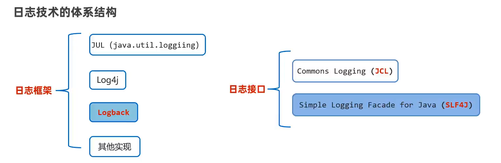
| 日志级别 | 说明 |
|---|---|
| trace | 跟踪，指明程序运行的轨迹（很少用） |
| debug | 调试，实际用应用时一般作为最低级别 |
| info | 输出重要的运行信息 |
| warn | 警告信息，记录可能会发生的问题 |
| error | 错误信息，记录发生的错误 |
多线程
多线程是指从软硬件上实现的多条执行流程技术（多条流程由CPU负责调度执行）
创建多线程
Java通过java.lang.Thread类的对象来代表线程
将类声明为Thread的子类，并重写run方法 调用线程对象的start()方法启动线程
xxxxxxxxxxpackage com.threads;public class threadmain {public static void main(String[] args) {thread1 a1 = new thread1();//启动线程a1.start();for (int i = 0; i < 5; i++) {System.out.println("主线程" + i);}}}package com.threads;public class thread1 extends Thread {public void run() {for (int i = 0; i < 5; i++) {System.out.println("子线程" + i);}}}优点：编码简单 缺点：不能再继承其他类，比例与扩展
注意： 启动时，必须调用strat方法，不能调用run方法 不要把主线程放在在子线程之前启动。
声明一个实现Runnable接口的类，然后实现run方法
xxxxxxxxxxpackage com.threads;public class thread1 implements Runnable {public void run() {for (int i = 0; i < 5; i++) {System.out.println(i);}}}package com.threads;public class threadmain {public static void main(String[] args) {//创建任务对象thread1 a1 = new thread1();//创建一个Thread对象，传入任务对象处理Thread a2 = new Thread(a1);//调用线程对象，start启动线程a2.start();for (int i = 0; i < 5; i++) {System.out.println("主线程" + i);}}}优点：任务只实现了接口，还可以继承其他类，扩展性更强
另一种方法：匿名内部类形式
xxxxxxxxxxpackage com.threads;public class threadmain {public static void main(String[] args) {Runnable a = () -> {for (int i = 0; i < 5; i++) {System.out.println("子线程" + i);}};new Thread(a).start();for (int i = 0; i < 5; i++) {System.out.println("ZHU111线程" + i);}}}利用Callable接口，FutureTask类来实现
若要run执行完后，有一些数据需要返回，前面两种方式都无法满足这个需求，就需要用到这种方式
创建任务对象，定义一个类，实现callable方法，重写call方法，封装业务逻辑代码和返回的数据
创建callable对象
将callable对象交给未来任务对象FultureTask
把未来任务对象交给Thread对象
调用Thread对象的start方法启动线程
线程执行完毕后通过FutureTask对象的get方法区获取线程任务的执行结果
xxxxxxxxxxpackage com.threads;import java.util.concurrent.Callable;import java.util.concurrent.ExecutionException;import java.util.concurrent.FutureTask;public class threadmain {public static void main(String[] args) throws ExecutionException, InterruptedException {//创建callable对象Callable<Integer> a = new thread1();//将callable对象交给未来任务对象FultureTaskFutureTask<Integer> b = new FutureTask<Integer>(a);Thread v = new Thread(b);v.start();System.out.println(b.get());}}xxxxxxxxxxpackage com.threads;import java.util.concurrent.Callable;public class thread1 implements Callable<Integer> {public Integer call() throws Exception {int s = 0;for (int i = 1; i <= 100; i++) {s += i;}return s;}}优点：线程任务类只实现了接口，可以继续继承类和实现接口，扩展性更好，可以在线程执行完毕后获取线程执行的结果。
Thread常用方法
| 方法 | 说明 |
|---|---|
| run() | 线程的任务方法 |
| start() | 启动线程0 |
| getName() | 获取当前线程的名称，默认名称：Thread-索引 |
| setName(String name) | 为线程设置名称 |
| currentThread() | 获取当前执行的线程对象 |
| sleep(long time) | 让当前执行的线程休眠xx毫秒后继续执行 |
| join() | 让调用当前这个方法的线程先执行完 |
| 构造器 | 说明 |
|---|---|
| Thread(String name) | 可为线程指定名称 |
| Thread(Runnable tar) | 封装Runnable对象为线程对象 |
| Thread(Runnable tar,String name) | 封装Runnable对象为线程对象，为线程指定名称 |
线程安全
多个线程，在同时操作一个共享资源时，可能会出现业务安全问题。
模拟线程安全问题
xxxxxxxxxx//账户类package com.threads;
public class money { private int money = 10000; public int getMoney() { return money; }
public void setMoney(int money) { this.money = money; }
public void quqian(int m) throws InterruptedException { String names = Thread.currentThread().getName(); System.out.println(names + " 尝试取款 " + m + " 当前余额 " + money); Thread.sleep(50); // 增加延迟时间 if (m <= this.money) { Thread.sleep(50); // 增加延迟时间 this.money -= m; System.out.println(names + " 取款成功，余额 " + money); } else { System.out.println(names + " 取款失败，余额不足"); } }}xxxxxxxxxx//操作类package com.threads;
public class thread1 extends Thread { private money m; public thread1(money m, String name) { super(name); this.m = m; }
public void run() { try { m.quqian(10000); } catch (InterruptedException e) { throw new RuntimeException(e); } }}xxxxxxxxxx//测试类package com.threads;
import java.util.concurrent.ExecutionException;
public class threadmain { public static void main(String[] args) throws ExecutionException, InterruptedException { money m1 = new money(); new thread1(m1, "张三").start(); new thread1(m1, "里斯").start(); new thread1(m1, "王五").start(); new thread1(m1, "赵六").start(); new thread1(m1, "飞机").start(); }}
//张三取钱成功0//里斯取钱成功0//此时发现两个人都取钱成功/*王五 尝试取款 10000 当前余额 10000赵六 尝试取款 10000 当前余额 10000里斯 尝试取款 10000 当前余额 10000张三 尝试取款 10000 当前余额 10000飞机 尝试取款 10000 当前余额 10000王五 取款失败，余额不足飞机 取款失败，余额不足张三 取款成功，余额 0赵六 取款成功，余额 0里斯 取款成功，余额 0*/
线程同步
为了解决线程安全的问题，需要使用线程同步解决此问题。 让多个资源实现先后依次访问共享资源
常见方案 加锁：只允许一个线程加锁，线程加锁后才能进入访问资源，访问完毕后自动解锁，然后其他进程才能继续加锁来进行访问。
方法1：同步代码块 作用：把访问的共享资源的核心代码上锁，保证线程安全
xxxxxxxxxxsynchronized(同步锁){访问共享资源的核心代码}xxxxxxxxxxpackage com.threads;public class money {private int money = 10000;public int getMoney() {return money;}public void setMoney(int money) {this.money = money;}public void quqian(int m) throws InterruptedException {String names = Thread.currentThread().getName();System.out.println(names + " 尝试取款 " + m + " 当前余额 " + money);// 增加延迟时间Thread.sleep(20);//将核心代码块加锁synchronized (this ) {if (m <= this.money) {// 增加延迟时间this.money -= m;System.out.println(names + " 取款成功，余额 " + money);} else {System.out.println(names + " 取款失败，余额不足");}}}}对于当前同时执行的线程来说，同步锁必须是同一个对象，否则可能会出BUG 建议使用共享资源作为锁对象
方法2：同步方法 把访问共享资源的核心方法上锁，保证线程安全 在方法的前面加上synchronized关键字进行修饰。静态方法也适用
xxxxxxxxxxpackage com.threads;public class money {private int money = 10000;public int getMoney() {return money;}public void setMoney(int money) {this.money = money;}//使用 synchronized修饰符public synchronized void quqian(int m) throws InterruptedException {String names = Thread.currentThread().getName();// 增加延迟时间Thread.sleep(20);if (m <= this.money) {System.out.println(names + " 尝试取款 " + m + " 当前余额 " + money);this.money -= m;System.out.println(names + " 取款成功，余额 " + money);} else {System.out.println(names + " 取款失败，余额不足");}}}方法3：lock锁 通过它可以说创建出锁对象进行加锁和解锁操作，更加灵活，更方便，更强大 Lock是一个接口，不能直接进行实例化，可以采用它的实现类ReentrantLock构建Lock锁对象
xxxxxxxxxxpackage com.threads;import java.util.concurrent.locks.Lock;import java.util.concurrent.locks.ReentrantLock;public class money {private int money = 10000;//创建一个账户锁对象private Lock a1 = new ReentrantLock();public int getMoney() {return money;}public void setMoney(int money) {this.money = money;}public void quqian(int m) throws InterruptedException {String names = Thread.currentThread().getName();// 加锁操作a1.lock();Thread.sleep(20);if (m <= this.money) {System.out.println(names + " 尝试取款 " + m + " 当前余额 " + money);this.money -= m;System.out.println(names + " 取款成功，余额 " + money);} else {System.out.println(names + " 取款失败，余额不足");}//解锁a1.unlock();}}
线程通信
当多个线程共同操作共享的资源时，线程通过某种方式告知自己的状态，以便相互协调，并避免无效的资源争夺
线程池
是一个可以复用线程的技术 当用户请求次数过多时，会创建出大量的新线程，占用CPU内存资源，这样会严重影响系统的性能
创建线程池
方法1：线程池接口：ExecutorService的实现类ThreadPoolExecutor自创建一个线程池对象
xxxxxxxxxxThreadPoolExecutor(int corePoolSize, int maximumPoolSize, long keepAliveTime, TimeUnit unit, BlockingQueue<Runnable> workQueue, ThreadFactory threadFactory, RejectedExecutionHandler handler)
参数解释
| 参数 | 说明 |
|---|---|
| corePoolSize | 线程池的核心线程的数量 |
| maximumPoolSize | 线程池的最大线程数量 |
| keepAliveTime | 临时线程的存活时间 |
| unit | 临时线程存活时间的单位 |
| workQueue | 线程池的任务队列 |
| threadFactory | 指定线程池的线程工厂 |
| handler | 指定线程池的任务拒绝策略，线程满了，任务队列也满了，新任务再来了该如何处理 |
方法2：Executors工具类实现线程池
| 方法名 | 说明 |
|---|---|
| newFixedThreadPool(int) | 创建固定线程数量的线程池，如果某个线程因为异常而结束，线程池中会补充一个新的线程来替换它。 |
| newSinglethreadExecutor() | 创建只有一个线程的线程池对象，如果该线程出现异常而结束，线程池中会补充一个新的线程来替换它。 |
| newCachedThreadPool() | 线程随任务增加而增加，如果线程任务执行完毕空闲60秒则会被回收。 |
| newSchediledThreadPool(int) | 创建一个线程池，可以实现给定的延迟后执行任务或定期执行任务。 |
这些方法都是通过线程池的实现类ThreadPoolExecutor创建的线程池对象 Executors在大型并发系统环境中如果不注意，可能会出现系统风险问题
处理Runnable,Callable任务
ExecutorService的常用方法
| 方法名 | 返回值 | 说明 |
|---|---|---|
| execute(Runnable cmd) | void | 执行Runnable任务 |
| submit() | Future<T> | 执行Callable任务，返回未来任务对象，用于获取线程返回的结果 |
| shutdown() | void | 等待全部任务执行完成后，再关闭线程池 |
| shutdownNow | List<Runnable> | 立即关闭线程池，停止正在执行的任务，返回未执行的任务 |
并发，并行
正在运行的程序/软件就是一个独立的进程。 线程是属于进程的，一个进程可以同时运行多个线程 进程中的多个线程是并发和并行执行的。
什么是并发？ 进程中的线程是由CPU负责调度执行的，但CPU能同时处理线程的数量有限，为了保证全部线程都能往前执行，CPU会轮询为系统的每个线程服务，由于CPU切换的速度很快，给我们的感觉这些线程在同时执行，这就是并发。
什么是并行？ 在同一时刻，同时有多个线程在被CPU调度执行
并发和并行是同时进行的
线程的生命周期
Java线程有6种 状态
xxxxxxxxxxNEW,RUNNABLE,BLOCKED,WAITING,TIMED_WAITING,TERMINATED;
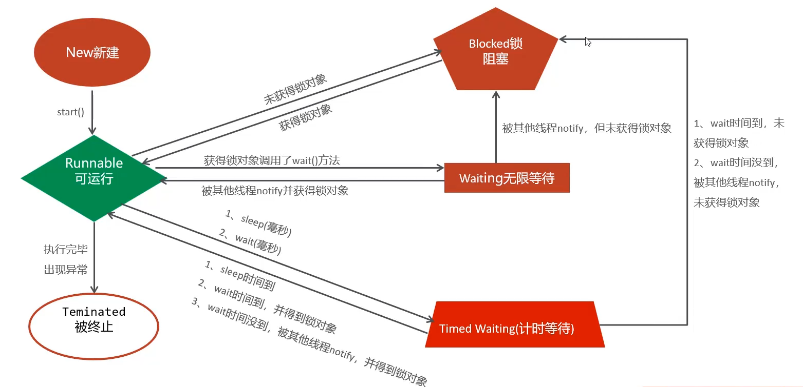
乐观锁
一开始不上锁，等要出现线程安全问题的时候才开始控制。性能较好，线程安全。
Java内置的，AtomicInteger(Atomicxxx)实现乐观锁
xxxxxxxxxxpackage com.leguanclock;
import java.util.concurrent.atomic.AtomicInteger;
public class leguansuo implements Runnable { //定义一个整数类型的乐观锁 private AtomicInteger count = new AtomicInteger();
public void run() { for (int i = 0; i < 100; i++) { System.out.println(Thread.currentThread().getName() + "=====>" + count.incrementAndGet());
} }}
网络通信
概述
网络编程 可以让设备中的程序和网络上的其他设备中的程序进行数据交互。
在Java中提供了一些网络编程方案 在java.net.* 包下提供了网络编程的解决方案
基本的通信架构 CS架构（客户端、服务器） BS架构（浏览器、服务器）
网络通信三要素
IP地址 设备在网络中的地址，是唯一的标识
端口号 应用程序在设备中的唯一标识
协议 连接和数据在网络中传输的规则
InetAddress
Java提供的一个类，代表IP地址。 InetAddress常用方法
| 名称 | 返回值类型 | 说明 |
|---|---|---|
| getLocalHost() | InetAddress | 获取本机IP，返回一个InetAddress对象 |
| getByName(String host) | InetAddress | 根据IP地址或域名，返回一个InetAddress对象 |
| getHostName() | String | 获取IP地址对象对应的主机名 |
| getHostAddress() | String | 获取当前IP地址对象对应的IP地址信息 |
| isReachable(int timeout) | boolean | 在指定的毫秒内，判断主机与该IP地址对应的主机是否能够连通 |
xxxxxxxxxximport java.net.InetAddress;import java.net.UnknownHostException;
public class inet { public static void main(String[] args) throws Exception { // getLocalHost()InetAddress获取本机IP，返回一个InetAddress对象 InetAddress a = InetAddress.getLocalHost(); System.out.println(a);
// getByName(String host)InetAddress根据IP地址或域名，返回一个InetAddress对象 System.out.println(InetAddress.getByName("192.168.3.3"));
//getHostName()String获取IP地址对象对应的主机名 System.out.println(a.getHostName());
//getHostAddress()String获取当前IP地址对象对应的IP地址信息 System.out.println(a.getHostAddress());
//isReachable(int timeout)boolean在指定的毫秒内，判断主机与该IP地址对应的主机是否能够连通 InetAddress b = InetAddress.getByName("192.168.3.3"); InetAddress c = InetAddress.getByName("www.baidu.com"); System.out.println(b.isReachable(1000)); System.out.println(c.isReachable(30)); }}
端口
端口：标记正在计算机设备上运行的应用程序
端口分类
周知端口：0-1023，被预先定义的知名应用占用，如：http-80,FTP-21
注册端口：1024-49151，分配给用户进程或某些应用程序
动态端口：49152-65535，一般不固定分配给某种进程，而是动态分配
自己开发的程序一般选择注册端口号，且一个设备中不能出现两个程序的端口号相同的情况
协议
网络上通信的设备，事先规定的连接规则，以及传输数据的规则，被称为网络通信协议
OSI网络参考模型：OSI网络参考模型
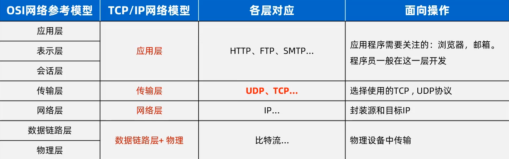
TCP/IP网络模型：事实上的网络标准
UDP通信
特点：无连接，不可靠通信
在Java中提供了一个java.net.DatagramSocket类实现UDP通信
| 构造器 | 说明 |
|---|---|
| DatagramSocket() | 创建客户端socket对象，系统会随机分配一个端口 |
| DatagramSocket(int port) | 创建客户端socket对象，指定一个端口 |
| 方法 | 说明 |
|---|---|
| send(DatagramPacket dp) | 发送数据包 |
| receive(DatagramPacket p) | 使用数据包接收数据 |
DatagramPacket：创建数据包
| 构造器 | 说明 |
|---|---|
| DatagramPacket(byte[] b, int length, InetAddress address, int port) | 创建发出去的数据包对象 |
| DatagramPacket(byte[] b, int length) | 创建用来接收数据的数据包 |
客户端程序
xxxxxxxxxximport java.net.*;
public class inet { public static void main(String[] args) throws Exception { //创建客户端对象--发送端 DatagramSocket a = new DatagramSocket(32415); byte[] bytes = "close".getBytes(); DatagramPacket a2 = new DatagramPacket(bytes, bytes.length, InetAddress.getLocalHost(), 32416); a.send(a2); System.out.println("数据发送成功"); a.close();
}}
服务端程序
xxxxxxxxxx
import java.net.DatagramPacket;import java.net.DatagramSocket;
public class server { public static void main(String[] args) throws Exception {
//创建服务端对象，接收端 System.out.println("------服务端启动！------"); DatagramSocket b = new DatagramSocket(32416);
//创建数据包对象，接收数据 byte[] b1 = new byte[1024 * 64]; DatagramPacket b2 = new DatagramPacket(b1, b1.length);
//使用数据包接收数据 while (true) { b.receive(b2); String str = new String(b1, 0, b2.getLength()); if (str.equals("close")) break; //打印接收的数据 //接受多少，打印多少，使用getlength方法获取接收数据包的大小 System.out.println(str); } b.close(); }}
TCP通信
特点：面向连接的可靠通信 通信双方先采用三次握手的方式建立可靠连接，实现端到端的通信，保证数据能够成功传输
客户端开发
在Java中提供了java.net.Socket类实现TCP通信
| 构造器 | 说明 |
|---|---|
| Socket(String host int port) | 根据指定的IP和端口号请求与服务端建立连接，成功后，就获得客户端socket |
| 方法 | 返回值 | 说明 |
|---|---|---|
| getOutputStream() | OutputStream | 获得字节输出流对象--发送数据 |
| getInputStream() | InputStream | 获取字节输入流对象--接收数据 |
xxxxxxxxxxpackage com.web;
import java.io.DataInputStream;import java.io.DataOutputStream;import java.io.InputStream;import java.io.OutputStream;import java.net.*;
public class inet { public static void main(String[] args) throws Exception { //创建socket对象，得到通信管道对象 Socket s = new Socket(InetAddress.getLocalHost(), 6666);
//获取字节输入输出流对象 OutputStream os = s.getOutputStream(); InputStream is = s.getInputStream();
//将低级流包装成高级流 DataOutputStream dos = new DataOutputStream(os); DataInputStream dis = new DataInputStream(is);
//使用
dos.writeUTF("我发送了一条消息");
dos.close();
}}
服务端开发
通过java.net.ServerSocket类来实现
| 构造器 | 说明 |
|---|---|
| ServerSocket(int port) | 为服务端程序注册端口 |
| 方法 | 返回值 | 说明 |
|---|---|---|
| accept() | Socket | 阻塞等待客户端的请求连接，一旦连接成功，就会返回服务端的Socket对象 |
xxxxxxxxxxpackage com.web;
import java.io.DataInputStream;import java.io.InputStream;import java.net.DatagramPacket;import java.net.DatagramSocket;import java.net.ServerSocket;import java.net.Socket;import java.util.Arrays;
public class server { public static void main(String[] args) throws Exception {
//创建服务端对象 ServerSocket s = new ServerSocket(6666); Socket s1 = s.accept(); InputStream in1 = s1.getInputStream(); DataInputStream din = new DataInputStream(in1);
System.out.println(din.readUTF());
System.out.println(s1.getRemoteSocketAddress()); }}
上面的客户端与服务器程序中，服务器只能接收一个客户端的数据，无法与多个客户端同时通信 让服务器可与多个客户端同时通信的方法——多线程 主线程：负责不断地接收新的客户端连接
xxxxxxxxxx//线程类package com.web;
import java.io.DataInputStream;import java.io.IOException;import java.io.InputStream;import java.net.ServerSocket;import java.net.Socket;
public class serverxc extends Thread { Socket s1;
public serverxc(Socket s) { this.s1 = s; }
public void run() { InputStream in1 = null; try { in1 = s1.getInputStream(); } catch (IOException e) { throw new RuntimeException(e); } DataInputStream din = new DataInputStream(in1);
while (true) { try { System.out.println(din.readUTF()); } catch (Exception e) { throw new RuntimeException(e); } System.out.println(s1.getRemoteSocketAddress()); } }
}xxxxxxxxxxpackage com.web;
import java.net.ServerSocket;import java.net.Socket;
public class server { public static void main(String[] args) throws Exception { ServerSocket s = new ServerSocket(6666); //创建服务端对象 while (true) { Socket s12 = s.accept(); new serverxc(s12).start(); } }}
案例：群聊 需求，一个人发消息，群聊中的其他人可以接收到这个消息
xxxxxxxxxx//服务端主程序package com.web;
import java.net.ServerSocket;import java.net.Socket;import java.util.ArrayList;import java.util.List;
public class server { //定义一个集合，存储在线的客户端 public static List<Socket> online = new ArrayList<>();
public static void main(String[] args) throws Exception { ServerSocket s = new ServerSocket(6666); //创建服务端对象 while (true) { Socket s12 = s.accept(); online.add(s12); new serverxc(s12).start(); } }}
xxxxxxxxxx//服务端转发线程程序package com.web;
import java.io.*;import java.net.ServerSocket;import java.net.Socket;import java.util.ArrayList;import java.util.List;
public class serverxc extends Thread { Socket s1;
public serverxc(Socket s) { this.s1 = s; }
public void run() {
try (InputStream in1 = s1.getInputStream(); DataInputStream din = new DataInputStream(in1)) { while (true) { String s = din.readUTF(); System.out.println(s); System.out.println(s1.getRemoteSocketAddress()); fasongAll(s);
} } catch (Exception e) { server.online.remove(s1); } }
private void fasongAll(String s) throws Exception {
for (Socket socket : server.online) { OutputStream os = socket.getOutputStream(); DataOutputStream dos = new DataOutputStream(os); dos.writeUTF(s); } }}
xxxxxxxxxx//客户端主程序package com.web;
import java.io.DataInputStream;import java.io.DataOutputStream;import java.io.InputStream;import java.io.OutputStream;import java.net.*;import java.util.Scanner;
public class inet { public static void main(String[] args) throws Exception { //创建socket对象，得到通信管道对象 Socket s = new Socket(InetAddress.getLocalHost(), 6666); new goother(s).start(); //获取字节输入输出流对象 OutputStream os = s.getOutputStream(); InputStream is = s.getInputStream();
//将低级流包装成高级流 DataOutputStream dos = new DataOutputStream(os); DataInputStream dis = new DataInputStream(is); Scanner sc = new Scanner(System.in); //使用
while (true) { System.out.println("请输入消息："); dos.writeUTF(sc.next()); }
// dos.close();
}}xxxxxxxxxx//客户端接收线程程序package com.web;
import java.io.*;import java.net.InetAddress;import java.net.Socket;import java.util.ArrayList;import java.util.Arrays;import java.util.Scanner;
public class goother extends Thread { Socket s1;
public goother(Socket s) { this.s1 = s; }
public void run() {
try (InputStream in1 = s1.getInputStream(); DataInputStream din = new DataInputStream(in1)) { while (true) { System.out.println(din.readUTF()); System.out.println(s1.getRemoteSocketAddress()); } } catch (Exception e) { server.online.remove(s1); } }}
BS架构开发
BS架构只需要开发服务端
HTTP协议规定的数据格式
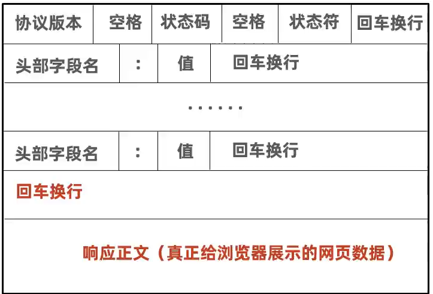
xxxxxxxxxx//服务端主程序package com.web;
import java.net.ServerSocket;import java.net.Socket;
public class server {
public static void main(String[] args) throws Exception { ServerSocket s = new ServerSocket(8080); //创建服务端对象 System.out.println("------服务器启动成功------"); while (true) { Socket s12 = s.accept(); System.out.println(STR."\{s12.getRemoteSocketAddress()}上线了"); new serverxc(s12).start(); } }}xxxxxxxxxx//服务端线程程序
package com.web;
import java.io.*;import java.net.Socket;
public class serverxc extends Thread { Socket s1;
public serverxc(Socket s) { this.s1 = s; }
public void run() { try { OutputStream out = s1.getOutputStream(); PrintStream pr = new PrintStream(out); pr.println("HTTP/1.1 200 OK"); pr.println("Content-Type:text/html;charset=UTF-8"); pr.println(); pr.println("<h1>HELLO WORLD</h1>"); pr.close(); out.close(); s1.close(); } catch (IOException e) { e.printStackTrace(); }
}}面对访问量较大的时候，每次请求都建立一个新的线程，容易让系统崩溃，可以用线程池解决这一问题，在高并发下，也不会让系统瘫痪
Java高级技术
单元测试
针对最小的功能单元进行测试，编辑测试代码对其进行正确性测试 之前要测试某一方法，需要在main方法中编写测试代码，不灵活，不方便
Junit测试框架
在IDEA中集成了该框架 优点： 可以灵活的编写代码，对某个方法进行测试，也就可以一键完成对全部方法的自动化测试 不需要自己去分析测试结果，会自动生成测试报告
使用步骤：
将Junit框架导入到项目
为需要测试的业务类定义对应的测试类，并为每个业务方法编写对应的测试方法（必须公共，无参，无返回值）
测试方法上必须声明@Test注解，然后在测试方法中，编写代码调用被测试的业务方法进行测试。
开始测试：选中测试方法，右键选择Junit印象，结果为绿色代表成功，红色代表失败。
xxxxxxxxxxpublic static void show() { System.out.println("hello");}xxxxxxxxxx
public void testshow() { junit1.show();}
断言机制：通过预测结果和实际运行结果对比，判断程序中是否存在bug
xxxxxxxxxx public static int shownum(String i) { return i.length(); }xxxxxxxxxx public void testshownum() { int i = junit1.shownum("abcdefg"); //引入断言机制 Assert.assertEquals("最大索引结果有误", 6, i); }
Junit框架常见注解
| 注解 | 说明 |
|---|---|
| @Test | 测试类中的方法必须用这个注解修饰才能成为测试方法，才能启动执行 |
| @Before | 用来修饰一个实例方法，该方法会在每一个测试方法执行前执行一次 |
| @After | 用来修饰一个实例方法，该方法会在每一个测试方法执行后执行一次 |
| @BeforeClass | 用来修饰一个静态方法，该方法会在所有测试方法之前只执行一次 |
| @AfterClass | 用来修饰一个静态方法，该方法会在所有测试方法之后只执行一次 |
在测试方法之前执行的方法常用于初始化资源 在测试方法之后执行的方法常用于释放资源